Dependencies#
import re
import numpy as np
import pandas as pd
from cebra.data.datasets import DatasetxCEBRA
from cebra.data import ContrastiveMultiObjectiveLoader
from cebra.data.datatypes import BatchIndex
import inspect
from typing import Optional
import torch
import os, json, csv, copy, shutil
import matplotlib.pyplot as plt
import matplotlib as mpl
mpl.rcParams['svg.fonttype'] = 'none'
import nibabel as nib
from nilearn import plotting, datasets, surface
import cebra
from cebra.solver import MultiObjectiveConfig
from cebra.solver.schedulers import LinearRampUp
from cebra.data.helper import _require_numpy_array, OrthogonalProcrustesAlignment
import SUITPy as suit
from nilearn.image import resample_to_img
from matplotlib.colors import LinearSegmentedColormap
### SET BASE_DIR ###
BASE_DIR = '/mnt/moritz'
Custom Multi-Objective Loader#
class SubjectSessionBoundaryMultiObjectiveLoader(ContrastiveMultiObjectiveLoader):
"""
Multi-objective loader that samples indices respecting subject/session boundaries. It ensures that positive pairs are
sampled within the same subject/session, and makes sure that the temporal receptive field of the model does not cross
subject/session boundaries.
"""
def __init__(
self,
dataset,
*,
batch_size: int,
time_offset: int,
num_steps: int,
generator: Optional[torch.Generator] = None,
device: Optional[str | torch.device] = None,
):
base_init = ContrastiveMultiObjectiveLoader.__init__
sig = inspect.signature(base_init)
params = sig.parameters
base_kwargs = {"dataset": dataset, "batch_size": batch_size}
if "num_steps" in params:
base_kwargs["num_steps"] = num_steps
if "generator" in params:
base_kwargs["generator"] = generator
base_init(self, **base_kwargs)
# Decide on the device for index tensors
if device is not None:
self._index_device = torch.device(device)
# Make sure the loader itself is moved to that device
if hasattr(self, "to"):
self.to(self._index_device)
else:
disc = getattr(dataset, "discrete", None)
if torch.is_tensor(disc):
self._index_device = disc.device
else:
self._index_device = torch.device("cuda:0")
self._generator = generator
self.time_offset = int(time_offset)
self.num_steps = int(num_steps)
self._dataset_len = len(dataset)
# Uses dataset.offset.left/right, which gives you the model's temporal receptive field.
self._offset_left: Optional[int] = None
self._offset_right: Optional[int] = None
# ---- 3) Build subject+session segments on the chosen device ----
discrete = torch.as_tensor(dataset.discrete, device=self._index_device)
if discrete.ndim == 1:
discrete = discrete.unsqueeze(1)
# change_mask[i] = True where discrete[i+1] != discrete[i] (subject or session changes)
change_mask = torch.any(discrete[1:] != discrete[:-1], dim=1)
boundaries = torch.nonzero(change_mask, as_tuple=False).flatten() + 1
# Add 0 as first boundary and N as last boundary
boundaries = torch.cat(
[
torch.tensor([0], dtype=torch.long, device=self._index_device),
boundaries.to(torch.long),
torch.tensor([self._dataset_len], dtype=torch.long, device=self._index_device),
]
)
self.segment_starts = boundaries[:-1]
self.segment_ends = boundaries[1:]
self.segment_lengths = self.segment_ends - self.segment_starts
# Map every index -> its segment ID
self.index_to_segment = torch.repeat_interleave(
torch.arange(len(self.segment_starts), dtype=torch.long, device=self._index_device),
self.segment_lengths,
)
# valid refs depend on offset, so we compute them lazily.
self.trf_safe_indices: Optional[torch.Tensor] = None
self.valid_refs: Optional[torch.Tensor] = None
# Try to pick up dataset.offset if it already exists (e.g., if user configured early)
self._maybe_set_offset_from_dataset()
if self._offset_left is not None and self._offset_right is not None:
self._recompute_valid_indices()
def __len__(self) -> int:
return self.num_steps
def _randint(self, low: int, high: int, shape: tuple[int, ...]) -> torch.Tensor:
if self._generator is None:
return torch.randint(low, high, shape, device=self._index_device)
return torch.randint(low, high, shape, device=self._index_device, generator=self._generator)
# ---------------------------
# Helpers to pull model-dependent offset from dataset
# ---------------------------
def _maybe_set_offset_from_dataset(self) -> None:
"""
Read dataset.offset.left/right if available and store them.
This is model-dependent and expected to be set by dataset.configure_for(model).
"""
off = getattr(self.dataset, "offset", None)
if off is None:
return
left = getattr(off, "left", None)
right = getattr(off, "right", None)
if left is None or right is None:
return
left = int(left)
right = int(right)
if left < 0 or right < 0:
raise ValueError("dataset.offset.left/right must be >= 0")
self._offset_left = left
self._offset_right = right
def _ensure_ready(self) -> None:
"""
Ensure we have offset and precomputed valid indices before sampling.
"""
if self._offset_left is None or self._offset_right is None:
self._maybe_set_offset_from_dataset()
if self._offset_left is None or self._offset_right is None:
raise RuntimeError(
"dataset.offset is not set yet (model-dependent). "
"Make sure you call dataset.configure_for(model) before training starts."
)
if self.valid_refs is None or self.trf_safe_indices is None:
self._recompute_valid_indices()
def _recompute_valid_indices(self) -> None:
"""
Compute TRF-safe indices and valid refs using dataset.offset.left/right.
"""
L = int(self._offset_left)
R = int(self._offset_right)
# segment length check uses L+R From model offset.
# We need indices where: idx >= start+L AND idx < end-R
if not torch.any(self.segment_lengths > (L + R)):
raise RuntimeError(
"No segments are long enough for the model's offset (left+right)."
)
indices = torch.arange(self._dataset_len, dtype=torch.long, device=self._index_device)
seg_ids = self.index_to_segment
seg_starts = self.segment_starts[seg_ids]
seg_ends = self.segment_ends[seg_ids]
# TRF-safe condition uses left/right offset.
trf_safe = (indices >= seg_starts + L) & (indices < seg_ends - R)
self.trf_safe_indices = indices[trf_safe]
# positive feasibility uses left/right offset too.
can_forward = (indices + self.time_offset) < (seg_ends - R)
can_backward = (indices - self.time_offset) >= (seg_starts + L)
valid_mask = trf_safe & (can_forward | can_backward)
self.valid_refs = indices[valid_mask]
if self.valid_refs.numel() == 0:
raise RuntimeError(
"No valid reference indices after applying dataset.offset and time_offset. "
"Try reducing time_offset or use a model with a smaller temporal offset."
)
def get_indices(self, num_samples: int) -> BatchIndex:
#ensure model-dependent offset has been set before sampling.
self._ensure_ready()
# 1) sample refs
ref_positions = self._randint(0, len(self.valid_refs), (num_samples,))
refs = self.valid_refs[ref_positions]
# 2) decide positive direction per ref, respecting boundaries
seg_ids = self.index_to_segment[refs]
seg_starts = self.segment_starts[seg_ids]
seg_ends = self.segment_ends[seg_ids]
L = int(self._offset_left)
R = int(self._offset_right)
can_forward = (refs + self.time_offset) < (seg_ends - R)
can_backward = (refs - self.time_offset) >= (seg_starts + L)
directions = torch.empty_like(refs, dtype=torch.long)
# Refs that can go both directions -> random ±1
both = can_forward & can_backward
if both.any():
rand = self._randint(0, 2, (int(both.sum().item()),))
rand = rand * 2 - 1 # 0 -> -1, 1 -> +1
directions[both] = rand
# Only forward possible
only_fwd = can_forward & ~can_backward
directions[only_fwd] = 1
# Only backward possible
only_bwd = can_backward & ~can_forward
directions[only_bwd] = -1
# Sanity check: every ref must have at least one valid direction
no_dir = ~(can_forward | can_backward)
if no_dir.any():
raise RuntimeError(
"Found a reference with no valid positive direction. "
"Decrease time_offset or use a model with smaller offset."
)
positives = refs + directions * self.time_offset
# 3) negatives: sample from TRF-safe indices, avoid neg == ref
neg_positions = self._randint(0, len(self.trf_safe_indices), (num_samples,))
negatives = self.trf_safe_indices[neg_positions]
collide = negatives == refs
while collide.any():
num_bad = int(collide.sum().item())
new_neg_positions = self._randint(0, len(self.trf_safe_indices), (num_bad,))
negatives[collide] = self.trf_safe_indices[new_neg_positions]
collide = negatives == refs
#wrap 'positives' in a list so it's compatible with MultiObjective loaders
return BatchIndex(refs, [positives], negatives, None, None)
# ---------- Helpers ----------
def normalize_sub_id(s: str) -> str:
"""Strip whitespace, drop trailing T1/T2 for GC/GS IDs; leave others as-is."""
s = str(s).strip()
su = s.upper()
if su.startswith(("GC", "GS")) and re.search(r"T[12]$", su):
return s[:-2]
return s
def sessions_to_int(arr) -> np.ndarray:
"""Map sessions to ints; supports 'T1'/'T2', numeric strings, or numeric arrays."""
a = np.asarray(arr)
if a.dtype.kind in "iuf":
return a.astype(np.int64)
s = np.char.upper(a.astype(str))
out = np.full(s.shape, -1, dtype=np.int64)
t2 = np.char.endswith(s, "T2")
t1 = np.char.endswith(s, "T1")
out[t2] = 2
out[t1] = 1
rem = ~(t1 | t2)
if np.any(rem):
# try parsing remaining as ints; invalids stay -1
try:
out[rem] = s[rem].astype(np.int64, copy=False)
except Exception:
pass
return out
def encode_subjects_joint(*label_arrays: np.ndarray) -> tuple[list[np.ndarray], np.ndarray]:
"""
Jointly integer-encode multiple subject label arrays so their codes are consistent across datasets.
Returns the list of encoded arrays (int64) and the 'classes_' (unique strings).
"""
labs = [np.asarray(x).astype(str) for x in label_arrays]
# normalize IDs first
labs_norm = [np.array([normalize_sub_id(u) for u in arr], dtype=object) for arr in labs]
# stack to compute a single mapping
all_concat = np.concatenate(labs_norm, axis=0).astype(str)
classes, inv_all = np.unique(all_concat, return_inverse=True)
# split back
split_points = np.cumsum([len(a) for a in labs_norm[:-1]])
inv_split = np.split(inv_all, split_points)
enc = [x.astype(np.int64) for x in inv_split]
return enc, classes
# ---------- Load dataset 1 (in-house cohort) ----------
path1 = os.path.join(BASE_DIR, 'CEBRA_project/data/Geneva_Schizophrenia_Begue/all_subjects_concat_fMRI_harvardoxford_timeseries.npz')
neural1 = np.load(path1, allow_pickle=True)['timeseries'].astype(np.float32)
session1 = np.load(path1, allow_pickle=True)['session_id']
with np.load(path1, allow_pickle=True) as f:
subj1 = f['sub_id'] # strings
# ---------- Load dataset 2 (HCP-EP) ----------
path2 = os.path.join(BASE_DIR, 'CEBRA_project/data/HCP-EP/all_subjects_concat_fMRI_harvardoxford_timeseries.npz')
neural2 = np.load(path2, allow_pickle=True)['timeseries'].astype(np.float32)
session2 = np.load(path2, allow_pickle=True)['session_id']
sub_session2 = np.load(path2, allow_pickle=True)['sub_session_id']
with np.load(path2, allow_pickle=True) as f:
subj2 = f['sub_id'] # strings (or ints)
# ---------- Load dataset 1 (in-house cohort) ----------
meta_data_path1 = os.path.join(BASE_DIR, 'CEBRA_project/data/Geneva_Schizophrenia_Begue/final_metadata.xlsx')
# Load the .xlsx file using pandas
meta_data_df1 = pd.read_excel(meta_data_path1)
# Ensure that both sub_id columns are strings (or both numerical if needed)
meta_data_df1['sub_id'] = meta_data_df1['sub_id'].astype(str) # Convert meta_data's sub_id to string
# Function to standardize subject IDs
def standardize_subj_id(subj_id):
# Remove leading zeros
subj_id = subj_id.lstrip("0")
if subj_id.endswith("T1") or subj_id.endswith("T2"):
subj_id = subj_id[:-2]
return subj_id
# Standardize subj1
subj1_standardized = np.array([standardize_subj_id(subj) for subj in subj1])
# Create a DataFrame with sub_id and session from the .npz data
npz_data_df1 = pd.DataFrame({
'sub_id': subj1_standardized,
'session': session1,
})
npz_data_df1['neural'] = [arr.astype(np.float32) for arr in neural1]
# Merge the fMRI-data to the metadata based on 'sub_id' and 'session'
merged_df1 = pd.merge(npz_data_df1, meta_data_df1,
left_on=['sub_id', 'session'], right_on=['sub_id', 'session'], how='left')
merged_df1["group"] = merged_df1["group"].map({
"Schizophrenia": 0,
"Healthy Control": 1
})
# ---------- Load dataset 2 (HCP-EP) ----------
path2 = os.path.join(BASE_DIR, 'CEBRA_project/data/HCP-EP/all_subjects_concat_fMRI_harvardoxford_timeseries.npz')
meta_data_path2 = os.path.join(BASE_DIR, 'CEBRA_project/data/HCP-EP/final_metadata.xlsx')
with np.load(path2, allow_pickle=True) as f:
subj2 = f['sub_id']
# Make both sides strings
meta_data_df2 = pd.read_excel(meta_data_path2)
meta_data_df2['sub_id'] = meta_data_df2['sub_id'].astype(str)
subj2 = subj2.astype(str)
npz_data_df2 = pd.DataFrame({
'sub_id': subj2,
'session': session2,
})
npz_data_df2['neural'] = [arr.astype(np.float32) for arr in neural2]
merged_df2 = pd.merge(
npz_data_df2,
meta_data_df2,
left_on=['sub_id'],
right_on=['sub_id'],
how='left'
)
merged_df2["group"] = merged_df2["group"].map({
"Non-affective psychosis": 0,
"Affective psychosis": 0,
"In good health": 1
})
# Add dataset identifier
merged_df2['ds_type'] = 2
merged_df1['ds_type'] = 1
combined = pd.concat([merged_df1, merged_df2], axis=0, ignore_index=True)
neural_all = np.concatenate([neural1, neural2], axis=0).astype(np.float32)
(subj1_enc, subj2_enc), classes_subj = encode_subjects_joint(subj1, subj2,)
sess1_int = sessions_to_int(session1)
sess2_int = sessions_to_int(session2)
sub_all = np.concatenate([subj1_enc, subj2_enc], axis=0).astype(np.int64)
sess_all = np.concatenate([sess1_int, sess2_int], axis=0).astype(np.int64)
discrete_all = np.column_stack([sub_all, sess_all]).astype(np.int64)
mask_pat = combined["group"].to_numpy() == 0
mask_con = combined["group"].to_numpy() == 1
subject_tensor = torch.as_tensor(sub_all, dtype=torch.long)
session_tensor = torch.as_tensor(sess_all, dtype=torch.long)
# Create datasets for CEBRA training
data = DatasetxCEBRA(
neural=torch.as_tensor(neural_all, dtype=torch.float32),
subject=subject_tensor,
session=session_tensor,
)
# Expose a 2D discrete index [subject, session] for the boundary-aware loader
data.discrete = torch.stack([subject_tensor, session_tensor], dim=1)
# Only patients
data_pat = DatasetxCEBRA(
neural=torch.as_tensor(neural_all[mask_pat], dtype=torch.float32),
subject=subject_tensor[mask_pat],
session=session_tensor[mask_pat],
)
data_pat.discrete = torch.stack([subject_tensor[mask_pat], session_tensor[mask_pat]], dim=1)
# Only controls
data_con = DatasetxCEBRA(
neural=torch.as_tensor(neural_all[mask_con], dtype=torch.float32),
subject=subject_tensor[mask_con],
session=session_tensor[mask_con],
)
data_con.discrete = torch.stack([subject_tensor[mask_con], session_tensor[mask_con]], dim=1)
Train models and calculate embeddings#
# Sweep Jacobian regularizer weights for xCEBRA; save models + logs;
device = "cuda:0" if torch.cuda.is_available() else "cpu"
print(f"Using device: {device}")
# =========================
# Helpers
# =========================
def mk_save_dir_for_weight(w):
wtag = str(w).replace('.', 'p')
path = os.path.join(save_root, f"regularizer_weight_{wtag}")
os.makedirs(path, exist_ok=True)
return path
def lastk_mean(series, k=10):
if series is None or not getattr(series, "size", 0):
return float("nan")
k = min(k, series.size)
return float(np.nanmean(series[-k:]))
def _norm_key(k):
if isinstance(k, str):
return k
if isinstance(k, (tuple, list)):
return "_".join(map(str, k))
return str(k)
def _to_jsonable(v):
if isinstance(v, torch.Tensor):
return v.detach().cpu().numpy().tolist()
if isinstance(v, np.ndarray):
return v.tolist()
if isinstance(v, (list, tuple)):
if len(v) == 0:
return []
if not isinstance(v[0], (list, tuple, dict, np.ndarray, torch.Tensor)):
try:
return [float(x) for x in v]
except Exception:
return [str(x) for x in v]
return [_to_jsonable(x) for x in v]
if isinstance(v, dict):
return {_norm_key(k2): _to_jsonable(v2) for k2, v2 in v.items()}
if isinstance(v, (int, float, bool)) or v is None:
return v
return str(v)
# Need to flatten embedding for consistency because it has 3 dimensions otherwise
def to_2d_embedding(x):
if isinstance(x, dict):
parts = [to_2d_embedding(v) for v in x.values()]
return np.concatenate(parts, axis=0)
if isinstance(x, (list, tuple)):
parts = [to_2d_embedding(v) for v in x]
return np.concatenate(parts, axis=0)
if torch.is_tensor(x):
x = x.detach().cpu().numpy()
x = np.asarray(x)
if x.ndim == 1:
return x.reshape(-1, 1)
if x.ndim >= 3:
return x.reshape(-1, x.shape[-1])
return x
def make_jsonable_log(log_dict):
return {_norm_key(k): _to_jsonable(v) for k, v in log_dict.items()}
def _to_series_1d(v):
if isinstance(v, torch.Tensor):
v = v.detach().cpu().numpy()
if isinstance(v, np.ndarray):
if v.ndim == 0:
return None
return v.astype(float).ravel()
if isinstance(v, (list, tuple)) and v and not isinstance(v[0], (list, tuple, dict)):
try:
return np.asarray(v, dtype=float).ravel()
except Exception:
return None
return None
def extract_series_from_log(log_dict, name, idx=None):
exact_key = None
for k in log_dict.keys():
if isinstance(k, (tuple, list)):
if len(k) == 1 and idx is None and str(k[0]) == name:
exact_key = k
break
if len(k) >= 2 and idx is not None and str(k[0]) == name and int(k[1]) == int(idx):
exact_key = k
break
elif isinstance(k, str):
if idx is None and k == name:
exact_key = k
break
if idx is not None and k == f"{name}_{idx}":
exact_key = k
break
if exact_key is not None:
s = _to_series_1d(log_dict[exact_key])
if s is not None:
return s
raise KeyError(f"Could not find a plottable series for key name '{name}' in solver.log.")
def load_existing_run(run_dir):
"""Return (embedding, log_dict) or (None, None) if incomplete."""
emb_path = os.path.join(run_dir, "embedding.npy")
log_path = os.path.join(run_dir, "training_log.json")
if not (os.path.exists(emb_path) and os.path.exists(log_path)):
return None, None
emb_np = np.load(emb_path)
with open(log_path, "r") as f:
log_json = json.load(f)
return emb_np, log_json
def train_for_weight(end_weight, data,
*,
num_steps=20000,
batch_size=512,
lr=3e-4,
temperature=0.1,
time_offset=20,
num_units=1024,
num_output=32,
model_name_prefix="offset5-model",
device="cuda:0",
):
# Fresh model
neural_model = cebra.models.init(
name=model_name_prefix,
num_neurons=data.neural.shape[1],
num_units=num_units,
num_output=num_output,
).to(device)
# Ensure torch tensor for neural data
if not isinstance(data.neural, torch.Tensor):
data.neural = torch.as_tensor(np.asarray(data.neural), dtype=torch.float32)
else:
data.neural = data.neural.detach().cpu().contiguous()
# Configure data
data.configure_for(neural_model)
off = getattr(data, "offset", None)
assert off is not None, "dataset.offset is missing after configure_for(model)"
assert getattr(off, "left", None) is not None and getattr(off, "right", None) is not None, \
"dataset.offset has no left/right"
# Loader + objective
loader = SubjectSessionBoundaryMultiObjectiveLoader(
dataset=data,
num_steps=num_steps,
batch_size=batch_size,
time_offset=time_offset,
device = device,
).to(device)
loader._ensure_ready()
config = MultiObjectiveConfig(loader)
config.set_loss("FixedCosineInfoNCE", temperature=temperature)
config.set_distribution("time", time_offset=time_offset)
config.set_slice(0, num_output)
config.push()
config.finalize()
criterion = config.criterion
feature_ranges = config.feature_ranges
opt = torch.optim.Adam(
list(neural_model.parameters()) + list(criterion.parameters()),
lr=lr,
weight_decay=0.0,
)
regularizer = cebra.models.jacobian_regularizer.JacobianReg()
# Initialize the solver with the model, criterion, optimizer, and regularizer
solver = cebra.solver.init(
name="multiobjective-solver",
model=neural_model,
feature_ranges=feature_ranges,
regularizer=regularizer,
renormalize=True,
use_sam=False,
criterion=criterion,
optimizer=opt,
tqdm_on=True,
).to(device)
# Set up a linear ramp-up scheduler for the regularizer weight
weight_scheduler = LinearRampUp(
n_splits=1,
step_to_switch_on_reg=num_steps // 4,
step_to_switch_off_reg=num_steps // 2,
start_weight=0.0,
end_weight=float(end_weight),
)
solver.fit(
loader=loader,
valid_loader=None,
log_frequency=None,
scheduler_regularizer=weight_scheduler,
scheduler_loss=None,
)
return solver, neural_model, config
def run_jacobian_weight_sweep(
data,
save_root: str,
weights_to_try,
num_repeats: int = 3,
k_last: int = 10,
make_per_run_plots: bool = True,
*,
num_steps=20000,
batch_size=512,
lr=3e-4,
temperature=0.1,
time_offset=20,
num_units=1024,
num_output=32,
model_name_prefix="offset5-model",
device="cuda:0",
):
"""
Runs a sweep over Jacobian regularizer end_weight values with repeats.
Assumes these helper functions exist in the namespace:
- mk_save_dir_for_weight(w)
- load_existing_run(run_dir)
- extract_series_from_log(log_dict, name, idx=None)
- lastk_mean(series, k)
- make_jsonable_log(log_dict)
- to_2d_embedding(x)
- train_for_weight(end_weight, data)
Returns a dict containing arrays for summaries + paths written.
"""
os.makedirs(save_root, exist_ok=True)
# Local helper so save_root is configurable
def _mk_save_dir_for_weight(w):
wtag = str(w).replace(".", "p")
path = os.path.join(save_root, f"regularizer_weight_{wtag}")
os.makedirs(path, exist_ok=True)
return path
data_template = copy.deepcopy(data)
all_weights = []
final_loss_train = []
final_sum_loss_train = []
final_regularizer = []
final_regularizer_weight = []
loss_lastk_mean_across_runs = []
# Optional: store per-weight per-run details for later analysis
per_weight_details = [] # list of dicts
for w in weights_to_try:
print(f"=== Training with regularizer end_weight={w} (n={num_repeats} runs) ===")
save_dir = _mk_save_dir_for_weight(w)
run_embeddings = []
loss_lastk_runs_this_weight = []
for run_idx in range(num_repeats):
run_dir = os.path.join(save_dir, f"run_{run_idx}")
os.makedirs(run_dir, exist_ok=True)
# ----------- CHECK IF RUN ALREADY EXISTS -----------
emb_np, log_json = load_existing_run(run_dir)
if emb_np is not None and log_json is not None:
print(f"-- Run {run_idx+1}/{num_repeats} for weight {w} already exists, loading from disk.")
run_embeddings.append(emb_np)
# loss_lastk for this run
try:
lt_series = extract_series_from_log(log_json, name="loss_train", idx=0)
loss_lastk_runs_this_weight.append(lastk_mean(lt_series, k_last))
except Exception as e:
print("Warning: could not extract loss_train[0] from loaded log:", e)
lt_series = None
# last run stats (last-k mean everywhere)
if run_idx == num_repeats - 1:
def _safe_series_mean(logd, keyname, idx):
try:
s = extract_series_from_log(logd, name=keyname, idx=idx)
return lastk_mean(s, k_last), s
except Exception:
return float("nan"), None
lt_mean, _ = _safe_series_mean(log_json, "loss_train", 0)
slt_mean, _ = _safe_series_mean(log_json, "sum_loss_train", None)
reg_mean, reg_s = _safe_series_mean(log_json, "regularizer", 0)
regw_mean, regw_s = _safe_series_mean(log_json, "regularizer_weight", 0)
all_weights.append(float(w))
final_loss_train.append(float(lt_mean))
final_sum_loss_train.append(float(slt_mean))
final_regularizer.append(float(reg_mean))
final_regularizer_weight.append(float(regw_mean))
continue # next run
# ----------- OTHERWISE: TRAIN THIS RUN -----------
print(f"-- Run {run_idx+1}/{num_repeats} for weight {w} (TRAINING)")
d = copy.deepcopy(data_template)
solver, model, config = train_for_weight(
w, d,
num_steps=num_steps,
batch_size=batch_size,
lr=lr,
temperature=temperature,
time_offset=time_offset,
num_units=num_units,
num_output=num_output,
model_name_prefix=model_name_prefix,
device=device,
)
# save per-run (CEBRA format)
solver.save(logdir=run_dir, filename="solver_cebra.pth")
# torch checkpoint
ckpt = {
"model_state_dict": model.state_dict(),
"criterion_state_dict": config.criterion.state_dict(),
"feature_ranges": config.feature_ranges,
"num_neurons": int(d.neural.shape[1]),
"num_units": int(num_units),
"num_output": int(num_output),
"temperature": float(temperature),
"time_offset": int(time_offset),
"end_weight": float(w),
"num_steps": int(num_steps),
"batch_size": int(batch_size),
"lr": float(lr),
"model_name_prefix": str(model_name_prefix),
"device": str(device),
"torch_version": torch.__version__,
}
torch.save(ckpt, os.path.join(run_dir, "model.pt"))
# also save to weight root for *last* run
if run_idx == num_repeats - 1:
torch.save(ckpt, os.path.join(save_dir, "model.pt"))
solver.save(logdir=save_dir, filename="solver_cebra.pth")
# embeddings
embedding = solver.transform(d.neural)
emb_np = to_2d_embedding(embedding)
np.save(os.path.join(run_dir, "embedding.npy"), emb_np)
torch.save(
{
"embedding": emb_np,
"end_weight": float(w),
"num_output": int(num_output),
"run_idx": int(run_idx),
},
os.path.join(run_dir, "embedding.pt"),
)
run_embeddings.append(emb_np)
# logs
torch.save(solver.log, os.path.join(run_dir, "training_log_raw.pt"))
with open(os.path.join(run_dir, "training_log.json"), "w") as f:
json.dump(make_jsonable_log(solver.log), f, ensure_ascii=False, indent=2)
# series extraction
def _get_series(logd, keyname, idx):
try:
return extract_series_from_log(logd, name=keyname, idx=idx)
except Exception as e:
print(f"Warning: could not find {keyname}{'' if idx is None else f'[{idx}]'}:", e)
return None
lt_series = _get_series(solver.log, "loss_train", 0)
slt_series = _get_series(solver.log, "sum_loss_train", None)
reg_series = _get_series(solver.log, "regularizer", 0)
regw_series = _get_series(solver.log, "regularizer_weight", 0)
# per-run loss summary (last-k mean)
if lt_series is not None and getattr(lt_series, "size", 0):
loss_lastk_runs_this_weight.append(lastk_mean(lt_series, k_last))
# per-run plots (optional)
if make_per_run_plots:
if reg_series is not None and getattr(reg_series, "size", 0):
plt.figure(figsize=(8, 5))
plt.plot(reg_series)
plt.title(f"regularizer (end_weight={w}, run={run_idx})")
plt.xlabel("Steps")
plt.ylabel("regularizer")
plt.tight_layout()
plt.savefig(os.path.join(run_dir, "regularizer_curve.png"), dpi=150)
plt.close()
if regw_series is not None and getattr(regw_series, "size", 0):
plt.figure(figsize=(8, 5))
plt.plot(regw_series)
plt.title(f"regularizer_weight (end_weight={w}, run={run_idx})")
plt.xlabel("Steps")
plt.ylabel("regularizer_weight")
plt.tight_layout()
plt.savefig(os.path.join(run_dir, "regularizer_weight_curve.png"), dpi=150)
plt.close()
# last run → update summaries (consistent: last-k mean)
if run_idx == num_repeats - 1:
all_weights.append(float(w))
final_loss_train.append(lastk_mean(lt_series, k_last) if lt_series is not None else float("nan"))
final_sum_loss_train.append(lastk_mean(slt_series, k_last) if slt_series is not None else float("nan"))
final_regularizer.append(lastk_mean(reg_series, k_last) if reg_series is not None else float("nan"))
final_regularizer_weight.append(lastk_mean(regw_series, k_last) if regw_series is not None else float("nan"))
# ensure root-level files exist if we loaded everything
root_model = os.path.join(save_dir, "model.pt")
root_solver = os.path.join(save_dir, "solver_cebra.pth")
last_run_dir = os.path.join(save_dir, f"run_{num_repeats-1}")
if (not os.path.exists(root_model)) and os.path.exists(os.path.join(last_run_dir, "model.pt")):
shutil.copyfile(os.path.join(last_run_dir, "model.pt"), root_model)
if (not os.path.exists(root_solver)) and os.path.exists(os.path.join(last_run_dir, "solver_cebra.pth")):
shutil.copyfile(os.path.join(last_run_dir, "solver_cebra.pth"), root_solver)
# aggregate per-weight loss across runs (mean of last-k means)
if len(loss_lastk_runs_this_weight):
loss_lastk_mean_over_runs = float(np.nanmean(loss_lastk_runs_this_weight))
else:
loss_lastk_mean_over_runs = float("nan")
loss_lastk_mean_across_runs.append(loss_lastk_mean_over_runs)
per_weight_details.append(
{
"end_weight": float(w),
"loss_lastk_per_run": [float(x) for x in loss_lastk_runs_this_weight],
"loss_lastk_mean_over_runs": float(loss_lastk_mean_over_runs),
"n_runs_found": int(len(loss_lastk_runs_this_weight)),
"save_dir": save_dir,
}
)
# =========================
# Sort summaries for CSV etc.
# =========================
order = np.argsort(all_weights)
w_sorted = np.asarray(all_weights, dtype=float)[order]
lt_sorted = np.asarray(final_loss_train, dtype=float)[order]
slt_sorted = np.asarray(final_sum_loss_train, dtype=float)[order]
reg_sorted = np.asarray(final_regularizer, dtype=float)[order]
regw_sorted = np.asarray(final_regularizer_weight, dtype=float)[order]
# =========================
# Combined plot: aggregated loss vs weight
# =========================
w_plot = np.asarray(weights_to_try, dtype=float)
loss_plot = np.asarray(loss_lastk_mean_across_runs, dtype=float)
order_joint = np.argsort(w_plot)
w_plot = w_plot[order_joint]
loss_plot = loss_plot[order_joint]
# --- 1. Define Style Helpers (Derived from your target plot) ---
def _apply_clean_style(ax):
"""Removes top and right spines, matches target aesthetics."""
ax.spines["top"].set_visible(False)
ax.spines["right"].set_visible(False)
ax.spines["left"].set_linewidth(1.0)
ax.spines["bottom"].set_linewidth(1.0)
ax.tick_params(width=1.0, length=4, labelsize=10)
ax.grid(False)
# --- 2. The Main Plotting Code ---
# Config (matching target dpi/size)
dpi = 200
figsize = (4, 4)
plt.figure(figsize=figsize, dpi=dpi)
ax1 = plt.subplot(111)
# Plotting
ax1.plot(w_plot, loss_plot, marker="o", markersize=5,
color="black", alpha=0.75, linewidth=1.5,
label=f"Mean last {k_last} steps")
# 1. Handle X-Axis (Regularizer Weight)
if np.any(w_plot > 0):
ax1.set_xscale("symlog", linthresh=1e-0) # Adjust linthresh as needed for your data
ax1.set_xlabel("Jacobian regularizer weight", fontsize=16)
else:
ax1.set_xlabel("Jacobian regularizer weight", fontsize=16)
# 2. Handle Y-Axis (Loss)
ax1.set_ylabel("Final contrastive loss", fontsize=16)
# 3. Aesthetics
_apply_clean_style(ax1)
# Title and Legend
ax1.set_title("Loss vs Regularizer", fontsize=12)
plt.tight_layout()
# Save and Show
loss_plot_path = os.path.join(save_root, "loss_aggregated_vs_regularizer_weight.svg")
plt.savefig(loss_plot_path)
plt.show()
# =========================
# CSV summary
# =========================
csv_path = os.path.join(save_root, "final_values_vs_regularizer_weight.csv")
with open(csv_path, "w", newline="") as f:
writer = csv.writer(f)
writer.writerow([
"end_weight",
f"loss_train_obj0_last{k_last}_mean",
f"sum_loss_train_last{k_last}_mean",
f"regularizer_obj0_last{k_last}_mean",
f"regularizer_weight_obj0_last{k_last}_mean",
])
for wv, lt, slt, r, rw in zip(w_sorted, lt_sorted, slt_sorted, reg_sorted, regw_sorted):
writer.writerow([wv, lt, slt, r, rw])
# Write detailed per-weight per-run loss stats
details_csv_path = os.path.join(save_root, "loss_details_per_weight.csv")
with open(details_csv_path, "w", newline="") as f:
writer = csv.writer(f)
writer.writerow(["end_weight", "run_idx", f"loss_train_obj0_last{k_last}_mean"])
for d in per_weight_details:
wv = d["end_weight"]
for ri, v in enumerate(d["loss_lastk_per_run"]):
writer.writerow([wv, ri, v])
print("Done. Per-weight models/logs (with runs) in:", save_root)
print("Wrote:",
loss_plot_path,
csv_path,
details_csv_path)
return {
"save_root": save_root,
"weights_to_try": list(weights_to_try),
"num_repeats": int(num_repeats),
"k_last": int(k_last),
"w_sorted": w_sorted,
"loss_sorted": lt_sorted,
"sum_loss_sorted": slt_sorted,
"regularizer_sorted": reg_sorted,
"regularizer_weight_sorted": regw_sorted,
"loss_aggregated_w": w_plot,
"loss_aggregated": loss_plot,
"per_weight_details": per_weight_details,
"paths": {
"loss_plot": loss_plot_path,
"summary_csv": csv_path,
"details_csv": details_csv_path,
}
}
Using device: cpu
weights_to_try = [0.0, 1.0, 5.0, 10.0, 25.0, 100.0, 1000.0, 10000.0]
results = run_jacobian_weight_sweep(
data=data,
save_root="xCEBRA_models_to_publish",
weights_to_try=weights_to_try,
num_repeats=3,
k_last=10,
make_per_run_plots=True,
)
# Only patients
results_pat = run_jacobian_weight_sweep(
data=data_pat,
save_root="xCEBRA_models_to_publish_pat",
weights_to_try=weights_to_try,
num_repeats=3,
k_last=10,
make_per_run_plots=True,
)
# Only controls
results_con = run_jacobian_weight_sweep(
data=data_con,
save_root="xCEBRA_models_to_publish_con",
weights_to_try=weights_to_try,
num_repeats=3,
k_last=10,
make_per_run_plots=True,
)
=== Training with regularizer end_weight=0.0 (n=3 runs) ===
-- Run 1/3 for weight 0.0 already exists, loading from disk.
-- Run 2/3 for weight 0.0 already exists, loading from disk.
-- Run 3/3 for weight 0.0 already exists, loading from disk.
=== Training with regularizer end_weight=1.0 (n=3 runs) ===
-- Run 1/3 for weight 1.0 already exists, loading from disk.
-- Run 2/3 for weight 1.0 already exists, loading from disk.
-- Run 3/3 for weight 1.0 already exists, loading from disk.
=== Training with regularizer end_weight=5.0 (n=3 runs) ===
-- Run 1/3 for weight 5.0 already exists, loading from disk.
-- Run 2/3 for weight 5.0 already exists, loading from disk.
-- Run 3/3 for weight 5.0 already exists, loading from disk.
=== Training with regularizer end_weight=10.0 (n=3 runs) ===
-- Run 1/3 for weight 10.0 already exists, loading from disk.
-- Run 2/3 for weight 10.0 already exists, loading from disk.
-- Run 3/3 for weight 10.0 already exists, loading from disk.
=== Training with regularizer end_weight=25.0 (n=3 runs) ===
-- Run 1/3 for weight 25.0 already exists, loading from disk.
-- Run 2/3 for weight 25.0 already exists, loading from disk.
-- Run 3/3 for weight 25.0 already exists, loading from disk.
=== Training with regularizer end_weight=100.0 (n=3 runs) ===
-- Run 1/3 for weight 100.0 already exists, loading from disk.
-- Run 2/3 for weight 100.0 already exists, loading from disk.
-- Run 3/3 for weight 100.0 already exists, loading from disk.
=== Training with regularizer end_weight=1000.0 (n=3 runs) ===
-- Run 1/3 for weight 1000.0 already exists, loading from disk.
-- Run 2/3 for weight 1000.0 already exists, loading from disk.
-- Run 3/3 for weight 1000.0 already exists, loading from disk.
=== Training with regularizer end_weight=10000.0 (n=3 runs) ===
-- Run 1/3 for weight 10000.0 already exists, loading from disk.
-- Run 2/3 for weight 10000.0 already exists, loading from disk.
-- Run 3/3 for weight 10000.0 already exists, loading from disk.
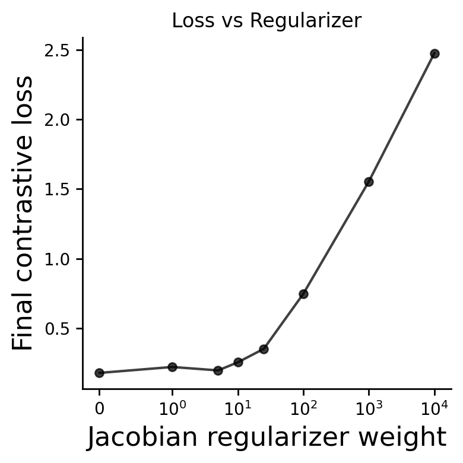
Done. Per-weight models/logs (with runs) in: xCEBRA_models_to_publish
Wrote: xCEBRA_models_to_publish/loss_aggregated_vs_regularizer_weight.svg xCEBRA_models_to_publish/final_values_vs_regularizer_weight.csv xCEBRA_models_to_publish/loss_details_per_weight.csv
=== Training with regularizer end_weight=0.0 (n=3 runs) ===
-- Run 1/3 for weight 0.0 already exists, loading from disk.
-- Run 2/3 for weight 0.0 already exists, loading from disk.
-- Run 3/3 for weight 0.0 already exists, loading from disk.
=== Training with regularizer end_weight=1.0 (n=3 runs) ===
-- Run 1/3 for weight 1.0 already exists, loading from disk.
-- Run 2/3 for weight 1.0 already exists, loading from disk.
-- Run 3/3 for weight 1.0 already exists, loading from disk.
=== Training with regularizer end_weight=5.0 (n=3 runs) ===
-- Run 1/3 for weight 5.0 already exists, loading from disk.
-- Run 2/3 for weight 5.0 already exists, loading from disk.
-- Run 3/3 for weight 5.0 already exists, loading from disk.
=== Training with regularizer end_weight=10.0 (n=3 runs) ===
-- Run 1/3 for weight 10.0 already exists, loading from disk.
-- Run 2/3 for weight 10.0 already exists, loading from disk.
-- Run 3/3 for weight 10.0 already exists, loading from disk.
=== Training with regularizer end_weight=25.0 (n=3 runs) ===
-- Run 1/3 for weight 25.0 already exists, loading from disk.
-- Run 2/3 for weight 25.0 already exists, loading from disk.
-- Run 3/3 for weight 25.0 already exists, loading from disk.
=== Training with regularizer end_weight=100.0 (n=3 runs) ===
-- Run 1/3 for weight 100.0 already exists, loading from disk.
-- Run 2/3 for weight 100.0 already exists, loading from disk.
-- Run 3/3 for weight 100.0 already exists, loading from disk.
=== Training with regularizer end_weight=1000.0 (n=3 runs) ===
-- Run 1/3 for weight 1000.0 already exists, loading from disk.
-- Run 2/3 for weight 1000.0 already exists, loading from disk.
-- Run 3/3 for weight 1000.0 already exists, loading from disk.
=== Training with regularizer end_weight=10000.0 (n=3 runs) ===
-- Run 1/3 for weight 10000.0 already exists, loading from disk.
-- Run 2/3 for weight 10000.0 already exists, loading from disk.
-- Run 3/3 for weight 10000.0 already exists, loading from disk.
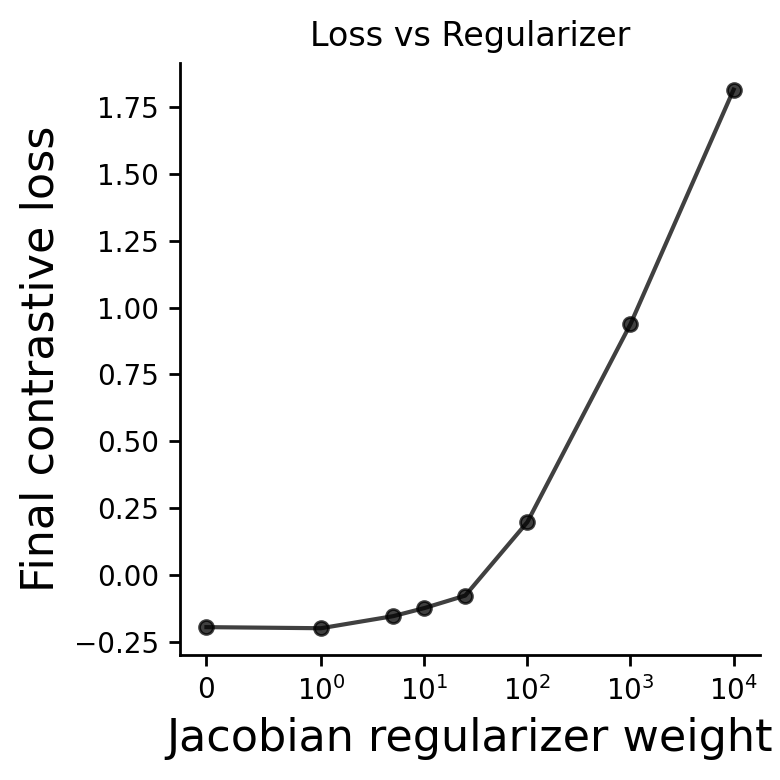
Done. Per-weight models/logs (with runs) in: xCEBRA_models_to_publish_pat
Wrote: xCEBRA_models_to_publish_pat/loss_aggregated_vs_regularizer_weight.svg xCEBRA_models_to_publish_pat/final_values_vs_regularizer_weight.csv xCEBRA_models_to_publish_pat/loss_details_per_weight.csv
=== Training with regularizer end_weight=0.0 (n=3 runs) ===
-- Run 1/3 for weight 0.0 already exists, loading from disk.
-- Run 2/3 for weight 0.0 already exists, loading from disk.
-- Run 3/3 for weight 0.0 already exists, loading from disk.
=== Training with regularizer end_weight=1.0 (n=3 runs) ===
-- Run 1/3 for weight 1.0 already exists, loading from disk.
-- Run 2/3 for weight 1.0 already exists, loading from disk.
-- Run 3/3 for weight 1.0 already exists, loading from disk.
=== Training with regularizer end_weight=5.0 (n=3 runs) ===
-- Run 1/3 for weight 5.0 already exists, loading from disk.
-- Run 2/3 for weight 5.0 already exists, loading from disk.
-- Run 3/3 for weight 5.0 already exists, loading from disk.
=== Training with regularizer end_weight=10.0 (n=3 runs) ===
-- Run 1/3 for weight 10.0 already exists, loading from disk.
-- Run 2/3 for weight 10.0 already exists, loading from disk.
-- Run 3/3 for weight 10.0 already exists, loading from disk.
=== Training with regularizer end_weight=25.0 (n=3 runs) ===
-- Run 1/3 for weight 25.0 already exists, loading from disk.
-- Run 2/3 for weight 25.0 already exists, loading from disk.
-- Run 3/3 for weight 25.0 already exists, loading from disk.
=== Training with regularizer end_weight=100.0 (n=3 runs) ===
-- Run 1/3 for weight 100.0 already exists, loading from disk.
-- Run 2/3 for weight 100.0 already exists, loading from disk.
-- Run 3/3 for weight 100.0 already exists, loading from disk.
=== Training with regularizer end_weight=1000.0 (n=3 runs) ===
-- Run 1/3 for weight 1000.0 already exists, loading from disk.
-- Run 2/3 for weight 1000.0 already exists, loading from disk.
-- Run 3/3 for weight 1000.0 already exists, loading from disk.
=== Training with regularizer end_weight=10000.0 (n=3 runs) ===
-- Run 1/3 for weight 10000.0 already exists, loading from disk.
-- Run 2/3 for weight 10000.0 already exists, loading from disk.
-- Run 3/3 for weight 10000.0 already exists, loading from disk.
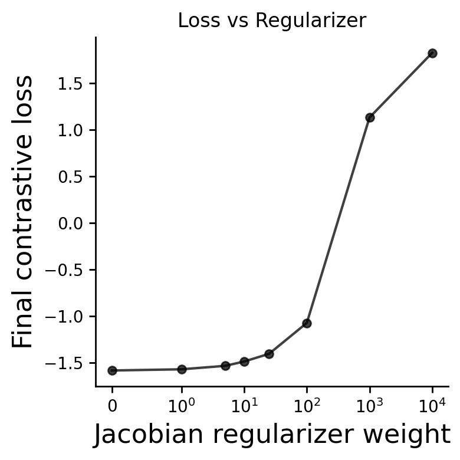
Done. Per-weight models/logs (with runs) in: xCEBRA_models_to_publish_con
Wrote: xCEBRA_models_to_publish_con/loss_aggregated_vs_regularizer_weight.svg xCEBRA_models_to_publish_con/final_values_vs_regularizer_weight.csv xCEBRA_models_to_publish_con/loss_details_per_weight.csv
Compute attribution maps#
# --- helper: parse/format weight tags ---
def _w_to_tag(w: float) -> str:
return str(w).replace(".", "p")
def _tag_to_w(tag: str) -> float:
return float(tag.replace("p", "."))
# --- loader ---
def _load_solver_for_weight_internal(
w: float,
data_for_config,
*,
run_idx: int,
save_root: str = "saved_xCEBRA_models",
model_name: str = None,
device: str = None,
):
wtag = _w_to_tag(w)
weight_dir = os.path.join(save_root, f"regularizer_weight_{wtag}")
run_dir = os.path.join(weight_dir, f"run_{run_idx}")
ckpt_path = os.path.join(run_dir, "model.pt")
if not os.path.exists(ckpt_path):
raise FileNotFoundError(f"Missing checkpoint: {ckpt_path}")
if device is None:
device = "0" if torch.cuda.is_available() else "cpu"
ckpt = torch.load(ckpt_path, map_location=device)
if model_name is None:
model_name = globals().get("model_name_prefix", "offset5-model")
model = cebra.models.init(
name=model_name,
num_neurons=int(ckpt["num_neurons"]),
num_units=int(ckpt["num_units"]),
num_output=int(ckpt["num_output"]),
).to(device)
model.load_state_dict(ckpt["model_state_dict"])
model.eval()
tmp_loader = ContrastiveMultiObjectiveLoader(
dataset=data_for_config,
num_steps=1,
batch_size=512,
).to(device)
cfg = MultiObjectiveConfig(tmp_loader)
cfg.set_loss("FixedCosineInfoNCE", temperature=float(ckpt.get("temperature", 0.1)))
cfg.set_distribution("time", time_offset=int(ckpt.get("time_offset", 20)))
cfg.set_slice(0, int(ckpt["num_output"]))
cfg.push()
cfg.finalize()
criterion = cfg.criterion
criterion.load_state_dict(ckpt["criterion_state_dict"])
solver = cebra.solver.init(
name="multiobjective-solver",
model=model,
feature_ranges=ckpt["feature_ranges"],
regularizer=cebra.models.jacobian_regularizer.JacobianReg(),
renormalize=False,
use_sam=False,
criterion=criterion,
optimizer=None,
tqdm_on=False,
).to(device)
return solver, model, cfg, ckpt, run_dir
# --- main function: iterate all runs and save into each run_* dir ---
def compute_and_save_jacobians_for_all_models(
data,
*,
save_root: str = "saved_xCEBRA_models",
weights: list[float] | None = None,
device: str | None = None,
batch_size: int = 32768,
overwrite: bool = False,
dtype: str = "float32",
model_name: str = "offset5-model"
):
if device is None:
device = "cuda:0" if torch.cuda.is_available() else "cpu"
# discover weights
if weights is None:
weights = []
if not os.path.isdir(save_root):
raise FileNotFoundError(f"save_root not found: {save_root}")
for name in os.listdir(save_root):
if name.startswith("regularizer_weight_"):
tag = name.split("regularizer_weight_")[-1]
try:
weights.append(_tag_to_w(tag))
except Exception:
pass
weights = sorted(weights, key=float)
if not weights:
raise RuntimeError("No trained weights found to process.")
# ensure tensor like during training
if not isinstance(data.neural, torch.Tensor):
data.neural = torch.as_tensor(np.asarray(data.neural), dtype=torch.float32)
else:
data.neural = data.neural.detach()
processed = []
skipped = []
for w in weights:
wtag = _w_to_tag(w)
weight_dir = os.path.join(save_root, f"regularizer_weight_{wtag}")
if not os.path.isdir(weight_dir):
continue
# discover run_* folders for this weight
run_dirs = sorted(
[d for d in os.listdir(weight_dir) if re.fullmatch(r"run_\d+", d)],
key=lambda s: int(s.split("_")[1])
)
if not run_dirs:
print(f"[w={w}] no run_* folders found in {weight_dir}")
continue
for run_name in run_dirs:
run_idx = int(run_name.split("_")[1])
dst_dir = os.path.join(weight_dir, run_name)
# If these files exist the run is already processed
required_outputs = [
os.path.join(dst_dir, "jacobian_raw_jf-convabs-inv-svd.npz"),
os.path.join(dst_dir, "jacobian_mean_jf.npz"),
os.path.join(dst_dir, "jacobian_mean_jf-inv-svd.npz"),
os.path.join(dst_dir, "jacobian_mean_jf-convabs-inv-svd.npz"),
]
if (not overwrite) and all(os.path.exists(p) for p in required_outputs):
print(f"[w={w} run={run_idx}] outputs exist → skipping (overwrite=True to recompute).")
skipped.append((w, run_idx))
continue
print(f"[w={w} run={run_idx}] loading + computing on device={device} …")
try:
# prefer user-defined loader if present, now with run_idx
loader_fn = globals().get("load_solver_for_weight", None)
if callable(loader_fn):
solver, model, cfg, ckpt, _ = loader_fn(
w, data_for_config=data, save_root=save_root, device=device, run_idx=run_idx
)
solver = solver.to(device)
model = solver.model
else:
raise NameError
except Exception:
solver, model, cfg, ckpt, _ = _load_solver_for_weight_internal(
w, data_for_config=data, save_root=save_root, device=device, run_idx=run_idx, model_name=model_name
)
d = copy.deepcopy(data)
d.neural = d.neural.detach().cpu().contiguous()
d.configure_for(model)
x = d.neural.to(device)
x.requires_grad_(True)
model = model.to(device)
model.eval()
if hasattr(model, "split_outputs"):
model.split_outputs = False
method = cebra.attribution.init(
name="jacobian-based-batched",
model=model,
input_data=x,
output_dimension=model.num_output,
)
result = method.compute_attribution_map(batch_size=batch_size)
# save raw arrays
def _np(x, dtype):
if torch.is_tensor(x): x = x.detach().cpu().numpy()
elif not isinstance(x, np.ndarray): x = np.asarray(x)
return x.astype(dtype, copy=False)
jf = _np(result.get("jf"), dtype)
jfinv = _np(result.get("jf-inv-svd"), dtype)
jfconvabsinv = _np(result.get("jf-convabs-inv-svd"), dtype)
np.savez_compressed(os.path.join(dst_dir, "jacobian_raw_jf.npz"), jf)
np.savez_compressed(os.path.join(dst_dir, "jacobian_raw_jf-inv-svd.npz"), jfinv)
np.savez_compressed(os.path.join(dst_dir, "jacobian_raw_jf-convabs-inv-svd.npz"), jfconvabsinv)
# means
jf_mean = np.abs(jf).mean(0).astype(dtype, copy=False)
jfinv_mean = np.abs(jfinv).mean(0).astype(dtype, copy=False)
jfconvabsinv_mean = np.abs(jfconvabsinv).mean(0).astype(dtype, copy=False)
np.savez_compressed(os.path.join(dst_dir, "jacobian_mean_jf.npz"), jf_mean)
np.savez_compressed(os.path.join(dst_dir, "jacobian_mean_jf-inv-svd.npz"), jfinv_mean)
np.savez_compressed(os.path.join(dst_dir, "jacobian_mean_jf-convabs-inv-svd.npz"), jfconvabsinv_mean)
# plots
def _plot(mat, title, path):
plt.figure()
plt.matshow(mat, aspect="auto", fignum=False)
plt.colorbar()
plt.title(title)
plt.tight_layout()
plt.savefig(path, dpi=160, bbox_inches="tight")
plt.close()
_plot(jf_mean, f"JF (end_weight={w}, run={run_idx})",
os.path.join(dst_dir, "jacobian_map_jf.png"))
_plot(jfinv_mean, f"JF-INV-SVD (end_weight={w}, run={run_idx})",
os.path.join(dst_dir, "jacobian_map_jf-inv-svd.png"))
_plot(jfconvabsinv_mean, f"JF-CONVABS-INV-SVD (end_weight={w}, run={run_idx})",
os.path.join(dst_dir, "jacobian_map_jf-convabs-inv-svd.png"))
# metadata
meta = {
"end_weight": float(w),
"run_idx": int(run_idx),
"device": device,
"dtype": dtype,
"input_shape": list(x.shape),
"jacobian_keys": ["jf", "jf-inv-svd", "jf-convabs-inv-svd"],
"torch_version": torch.__version__,
"cebra_version": getattr(cebra, "__version__", None),
}
with open(os.path.join(dst_dir, "jacobian_metadata.json"), "w") as f:
json.dump(meta, f, indent=2)
processed.append((w, run_idx))
del x, method, result, jf, jfinv, jfconvabsinv, jf_mean, jfinv_mean, jfconvabsinv_mean
if torch.cuda.is_available():
torch.cuda.empty_cache()
print("\n=== Jacobian extraction complete ===")
if processed:
print("Processed:", processed)
if skipped:
print("Skipped:", skipped)
# Extract and save Jacobians for all trained models (weights/runs) for the whole dataset, controls only, and patients only for later creation of attribution maps
compute_and_save_jacobians_for_all_models(data,batch_size = 4096, save_root=os.path.join(BASE_DIR, "CEBRA_project/Scripts_to_publish/xCEBRA_models_to_publish"),overwrite=False,weights=[10.0])
compute_and_save_jacobians_for_all_models(data_con,batch_size = 4096, save_root=os.path.join(BASE_DIR, "CEBRA_project/Scripts_to_publish/xCEBRA_models_to_publish_con"),overwrite=False,weights=[10.0])
compute_and_save_jacobians_for_all_models(data_pat,batch_size = 4096, save_root=os.path.join(BASE_DIR, "CEBRA_project/Scripts_to_publish/xCEBRA_models_to_publish_pat"),overwrite=False,weights=[10.0])
[w=10.0 run=0] outputs exist → skipping (overwrite=True to recompute).
[w=10.0 run=1] outputs exist → skipping (overwrite=True to recompute).
[w=10.0 run=2] outputs exist → skipping (overwrite=True to recompute).
=== Jacobian extraction complete ===
Skipped: [(10.0, 0), (10.0, 1), (10.0, 2)]
[w=10.0 run=0] outputs exist → skipping (overwrite=True to recompute).
[w=10.0 run=1] outputs exist → skipping (overwrite=True to recompute).
[w=10.0 run=2] outputs exist → skipping (overwrite=True to recompute).
=== Jacobian extraction complete ===
Skipped: [(10.0, 0), (10.0, 1), (10.0, 2)]
[w=10.0 run=0] outputs exist → skipping (overwrite=True to recompute).
[w=10.0 run=1] outputs exist → skipping (overwrite=True to recompute).
[w=10.0 run=2] outputs exist → skipping (overwrite=True to recompute).
=== Jacobian extraction complete ===
Skipped: [(10.0, 0), (10.0, 1), (10.0, 2)]
Procrustes align and average the convabs-inv jacobian maps with binarization on the single maps#
# --------------------------- helpers ---------------------------
def _wtag(w: float) -> str:
return str(w).replace(".", "p")
def _discover_runs(weight_dir: str):
runs = [d for d in os.listdir(weight_dir) if re.fullmatch(r"run_\d+", d)]
return sorted(runs, key=lambda s: int(s.split("_")[1]))
def _load_map(run_dir: str):
path = os.path.join(run_dir, "jacobian_mean_jf-convabs-inv-svd.npz")
if not os.path.exists(path):
raise FileNotFoundError(path)
z = np.load(path)
# Find the array
if "arr_0" in z.files:
J = z["arr_0"]
elif len(z.files) == 1:
J = z[z.files[0]]
else:
raise ValueError(f"Unexpected keys in {path}: {z.files}")
return _require_numpy_array(J)
def _ensure_dp(J: np.ndarray, d=None, p=None, label=""):
J = np.asarray(J)
if d is not None and p is not None:
if J.shape == (d, p): return J
if J.shape == (p, d):
print(f" · NOTE: transposed {label} from {J.shape} -> {(d,p)}")
return J.T
if J.ndim != 2:
raise ValueError(f"{label} must be 2D, got {J.shape}")
if J.shape[0] > J.shape[1]:
print(f" · NOTE: heuristic transpose {label} from {J.shape} -> {J.T.shape}")
return J.T
return J
def _zscore_threshold_zero(J: np.ndarray):
X = np.asarray(J, dtype=np.float64)
mask = np.isfinite(X)
mu = X[mask].mean()
sd = X[mask].std(ddof=0)
if sd == 0:
B = np.ones_like(X, dtype=np.float32)
return B, float(mu), float(sd)
Z = (X - mu) / sd
B = (Z >= 0.0).astype(np.float32)
return B, float(mu), float(sd)
def _save_png(J, title, out_png):
plt.figure(figsize=(6.4, 4.8))
plt.imshow(J, aspect="auto")
plt.colorbar()
plt.title(title)
plt.tight_layout()
plt.savefig(out_png, dpi=160, bbox_inches="tight")
plt.close()
# --------------------------- main ---------------------------
def align_and_mean_binary_cebra_procrustes_jf_inv(
*,
save_root: str,
weights: list[float],
reference_weight: float | None = None,
reference_run: int = 0,
subsample_cols: int | float | None = None, # None | int | fraction (0,1]
max_subsamples: int = 40000,
rng_seed: int = 0,
out_suffix: str = "binary_mean",
save_pngs: bool = True,
top_k: int | None = None, # forwarded to OrthogonalProcrustesAlignment
subsample: bool | None = None, # forwarded to OrthogonalProcrustesAlignment
):
"""
Align jf-convabs-inv-svd maps using CEBRA's OrthogonalProcrustesAlignment,
threshold each aligned map at z >= 0, and average the binary masks.
"""
if reference_weight is None:
reference_weight = weights[0]
# --- reference map ---
ref_wdir = os.path.join(save_root, f"regularizer_weight_{_wtag(reference_weight)}")
ref_dir = os.path.join(ref_wdir, f"run_{reference_run}")
J_ref = _ensure_dp(_load_map(ref_dir), label=f"ref w={reference_weight} run={reference_run}")
d, p = J_ref.shape
print(f"Reference: w={reference_weight}, run={reference_run}, shape={J_ref.shape}")
rng = np.random.default_rng(rng_seed)
if subsample_cols is None:
subset_idx = None
print(f"Procrustes fit on ALL {p} columns.")
elif isinstance(subsample_cols, float):
if not (0 < subsample_cols <= 1.0):
raise ValueError("subsample_cols as float must be in (0,1].")
k = min(int(np.ceil(p * subsample_cols)), max_subsamples)
subset_idx = np.sort(rng.choice(p, size=k, replace=False))
print(f"Procrustes fit on {k}/{p} columns (fraction={subsample_cols}).")
else:
k = min(int(subsample_cols), p, max_subsamples)
if k <= 0:
raise ValueError("subsample_cols must be positive.")
subset_idx = np.sort(rng.choice(p, size=k, replace=False))
print(f"Procrustes fit on {k}/{p} columns (int).")
# CEBRA Procrustes alignment
ortho_alignment = OrthogonalProcrustesAlignment(top_k=top_k, subsample=subsample)
labels = []
bin_maps = []
for w in weights:
wdir = os.path.join(save_root, f"regularizer_weight_{_wtag(w)}")
run_names = _discover_runs(wdir)
if not run_names:
print(f" ! No runs in {wdir}, skipping weight {w}")
continue
print(f"\nWeight {w} — runs: {', '.join(run_names)}")
for run_name in run_names:
run_idx = int(run_name.split("_")[1])
rdir = os.path.join(wdir, run_name)
J = _ensure_dp(_load_map(rdir), d, p, label=f"w={w} run={run_idx}")
print(J.shape)
# Fit alignment on the transposed matrices (shape: p x d)
ref_T = J_ref.T
run_T = J.T
if subset_idx is None:
ortho_alignment.fit(
ref_data=ref_T,
data=run_T,
ref_label=None,
label=None,
)
else:
ortho_alignment.fit(
ref_data=ref_T[subset_idx],
data=run_T[subset_idx],
ref_label=None,
label=None,
)
# Transform the full run map and transpose back to (d x p)
aligned_T = ortho_alignment.transform(run_T) # (p x d), aligned to ref_T
J_aligned = aligned_T.T.astype(np.float32, copy=False)
# Save aligned continuous and PNG
np.save(os.path.join(rdir, "jacobian_mean_jf-convabs-inv-svd_cebra_procrustes.npy"), J_aligned)
if save_pngs:
_save_png(
J_aligned,
f"jf-convabs-inv-svd (CEBRA Procrustes) — w={w} run={run_idx}",
os.path.join(rdir, "jacobian_map_jf-convabs-inv-svd_cebra_procrustes.png"),
)
# Z-score per aligned map, threshold at 0, save
B, mu, sd = _zscore_threshold_zero(J_aligned)
np.save(os.path.join(rdir, "jacobian_mean_jf-convabs-inv-svd_cebra_procrustes_binary_z0.npy"), B)
if save_pngs:
_save_png(
B,
f"Binary (z≥0) after CEBRA Procrustes — w={w} run={run_idx} [μ={mu:.3g}, σ={sd:.3g}]",
os.path.join(rdir, "jacobian_map_jf-convabs-inv-svd_cebra_procrustes_binary_z0.png"),
)
labels.append(f"w={w}:run={run_idx}")
bin_maps.append(B)
if not bin_maps:
raise RuntimeError("No aligned/thresholded maps collected; check paths/weights.")
# Mean of binary masks
A = np.stack(bin_maps, axis=0) # (m, d, p)
mean_binary = A.mean(axis=0).astype(np.float32)
suf = (out_suffix or "").strip()
suf = f"_{suf}" if suf else ""
out_mean = os.path.join(save_root, f"jf_convabs_inv_svd_cebra_procrustes{suf}.npy")
np.save(out_mean, mean_binary)
if save_pngs:
_save_png(
mean_binary,
"Mean of (CEBRA-aligned, z≥0) jf-convabs-inv-svd maps",
os.path.join(save_root, f"jf_convabs_inv_svd_cebra_procrustes{suf}.png"),
)
# Metadata
meta = {
"reference": {"weight": float(reference_weight), "run": int(reference_run)},
"weights": list(map(float, weights)),
"save_root": save_root,
"map_key": "jacobian_mean_jf-convabs-inv-svd.npz",
"aligner": "cebra.data.helper.OrthogonalProcrustesAlignment",
"aligner_args": {"top_k": top_k, "subsample": subsample},
"subsample_cols": (None if subset_idx is None else int(len(subset_idx))),
"max_subsamples": int(max_subsamples),
"thresholding": "per-map z-score >= 0 after alignment",
"labels_included": labels,
"outputs": {
"mean_binary_npy": os.path.basename(out_mean),
"mean_binary_png": f"jf_convabs_inv_svd_cebra_procrustes{suf}.png" if save_pngs else None,
},
}
with open(os.path.join(save_root, f"jf_convabs_inv_svd_cebra_procrustes_meta{suf}.json"), "w") as f:
json.dump(meta, f, indent=2)
print(f"\n✓ Completed. Averaged {A.shape[0]} binary maps → {out_mean}")
return mean_binary, labels
COMMON_PARAMS = {
"weights": [10.0],
"reference_run": 0,
"subsample_cols": None,
"max_subsamples": 40000,
"rng_seed": 0,
"out_suffix": "binary_mean",
"save_pngs": True,
"top_k": 5,
"subsample": None,
}
# 1. Full Dataset
print("\n=== Processing FULL Dataset ===")
align_and_mean_binary_cebra_procrustes_jf_inv(
save_root=os.path.join(BASE_DIR, "CEBRA_project/Scripts_to_publish/xCEBRA_models_to_publish"),
reference_weight=10.0, # Explicitly passed
**COMMON_PARAMS
);
# 2. Control Group
print("\n=== Processing CONTROLS ===")
align_and_mean_binary_cebra_procrustes_jf_inv(
save_root=os.path.join(BASE_DIR, "CEBRA_project/Scripts_to_publish/xCEBRA_models_to_publish_con"),
reference_weight=10.0,
**COMMON_PARAMS
);
# 3. Patient Group
print("\n=== Processing PATIENTS ===")
align_and_mean_binary_cebra_procrustes_jf_inv(
save_root=os.path.join(BASE_DIR, "CEBRA_project/Scripts_to_publish/xCEBRA_models_to_publish_pat"),
reference_weight=10.0,
**COMMON_PARAMS
);
=== Processing FULL Dataset ===
Reference: w=10.0, run=0, shape=(32, 141)
Procrustes fit on ALL 141 columns.
Weight 10.0 — runs: run_0, run_1, run_2
(32, 141)
(32, 141)
(32, 141)
✓ Completed. Averaged 3 binary maps → /mnt/moritz/CEBRA_project/Scripts_to_publish/xCEBRA_models_to_publish/jf_convabs_inv_svd_cebra_procrustes_binary_mean.npy
=== Processing CONTROLS ===
Reference: w=10.0, run=0, shape=(32, 141)
Procrustes fit on ALL 141 columns.
Weight 10.0 — runs: run_0, run_1, run_2
(32, 141)
(32, 141)
(32, 141)
✓ Completed. Averaged 3 binary maps → /mnt/moritz/CEBRA_project/Scripts_to_publish/xCEBRA_models_to_publish_con/jf_convabs_inv_svd_cebra_procrustes_binary_mean.npy
=== Processing PATIENTS ===
Reference: w=10.0, run=0, shape=(32, 141)
Procrustes fit on ALL 141 columns.
Weight 10.0 — runs: run_0, run_1, run_2
(32, 141)
(32, 141)
(32, 141)
✓ Completed. Averaged 3 binary maps → /mnt/moritz/CEBRA_project/Scripts_to_publish/xCEBRA_models_to_publish_pat/jf_convabs_inv_svd_cebra_procrustes_binary_mean.npy
Plotting on brain#
# ========= LABEL PARSING HELPERS =========
import xml.etree.ElementTree as ET
import pandas as pd
def parse_ho_xml(xml_path, offset=1):
"""
Parses Harvard-Oxford XML.
"""
try:
tree = ET.parse(xml_path)
root = tree.getroot()
labels = {}
for label in root.findall(".//label"):
# XML indices usually start at 0, but NIfTI integers start at 1
idx = int(label.get("index")) + offset
name = label.text.strip()
labels[idx] = name
return labels
except Exception as e:
print(f"Error parsing XML {xml_path}: {e}")
return {}
def parse_sub_xlsx(xlsx_path):
"""
Parses Subcortical Excel file.
"""
try:
df = pd.read_excel(xlsx_path)
# Normalize column names to lowercase to be safe
df.columns = [c.lower().strip() for c in df.columns]
if 'label' not in df.columns:
print(f"Error: Excel file must have a 'label' column. Found: {df.columns.tolist()}")
return {}
# Create dict {row_number: label_name}
# Enumerate starts at 0, so we add 1 to match NIfTI 1-based indexing
return {i + 1: str(name).strip() for i, name in enumerate(df['label'])}
except Exception as e:
print(f"Error parsing XLSX {xlsx_path}: {e}")
return {}
def parse_cereb_tsv(tsv_path):
"""Parses Cerebellum TSV"""
try:
df = pd.read_csv(tsv_path, sep="\t")
return pd.Series(df['name'].values, index=df['index'].values).to_dict()
except Exception as e:
print(f"Error parsing TSV {tsv_path}: {e}")
return {}
def plot_mean_binary_invjac_on_atlases_monokai(
*,
map_path: str,
atlas1: str,
atlas2: str,
atlas3: str,
population: str,
out_prefix: str = "from_mean_map",
vmax_percentile: float = 50,
save_svgs: bool = True,
show_plots: bool = True,
):
"""
Plots/saves the output of align_and_mean_binary_cebra_procrustes_jf_inv:
map_path = .../jf_convabs_inv_svd_cebra_procrustes_mean_binary_{suffix}.npy
Saves (in out_dir):
- cebra_stat_cortl_{out_prefix}.nii.gz
- cebra_stat_sub_{out_prefix}.nii.gz
- cebra_stat_anatom_{out_prefix}.nii.gz
- cebra_stat_combined_{out_prefix}.nii.gz
- cebra_roi_scores_{out_prefix}.csv
- plot_meta.json
- transparent SVGs with no axes/frames (keeps colorbar visible)
"""
# ========= HELPERS =========
def labels_in_img(img_path):
img = nib.load(img_path)
data = img.get_fdata()
labs, counts = np.unique(data.astype(np.int64), return_counts=True)
keep = [int(l) for l in labs if l != 0 and counts[labs.tolist().index(l)] > 0]
return img, np.array(sorted(keep), dtype=int)
def make_stat_from_label_image(img, scores_dict):
data = img.get_fdata().astype(np.int64)
stat = np.zeros_like(data, dtype=np.float32)
for idx, val in scores_dict.items():
if int(idx) == 0:
continue
stat[data == int(idx)] = float(val)
return nib.Nifti1Image(stat, img.affine, img.header)
# ========= plotting helpers =========
def attribution_cmap():
return mpl.colormaps["Blues"]
def save_transparent(disp, path, dpi=200):
disp.savefig(path, dpi=dpi, transparent=True, bbox_inches="tight", pad_inches=0)
def plot_and_save_cerebellar_flatmap(nifti_path, out_svg_path, cmap="Blues", vmin=0, vmax=1): #Blues
"""
Projects a 3D NIfTI image onto the SUIT cerebellar flatmap and saves it.
"""
try:
# 1. Map the 3D NIfTI to the 2D SUIT surface
# Specify space='MNI' because atlas is in MNI space.
# SUITPy will automatically sample the voxels onto the flatmap vertices.
surf_data = suit.flatmap.vol_to_surf([nifti_path], space='FSL', stats='mode')
# 2. Render the flatmap
fig = plt.figure(figsize=(8, 6))
ax = suit.flatmap.plot(
surf_data,
render='matplotlib',
cmap=cmap,
cscale=[vmin, vmax],
colorbar=True,
borders = 'borders.txt'
)
# 3. Save as transparent SVG
plt.savefig(out_svg_path, format="png", dpi=200, transparent=True, bbox_inches="tight")
plt.close(fig)
print(f"Saved Cerebellar flatmap SVG: {out_svg_path}")
except Exception as e:
print(f"Failed to create cerebellar flatmap: {e}")
# ========= outputs =========
if not os.path.exists(map_path):
raise FileNotFoundError(map_path)
out_dir = os.path.dirname(map_path)
os.makedirs(out_dir, exist_ok=True)
out3 = os.path.join(out_dir, f"cebra_stat_anatom_{out_prefix}.nii.gz")
out_table = os.path.join(out_dir, f"cebra_roi_scores_{out_prefix}.csv")
# ========= 1) Load the consensus map and collapse to per-ROI =========
M = np.load(map_path)
if M.ndim == 2:
V = M.mean(axis=0)
elif M.ndim == 1:
V = M
else:
raise ValueError(f"Unexpected map shape {M.shape}; expected (d,p) or (p,)")
# ========= 2) Load atlas label sets =========
img1, labels1 = labels_in_img(atlas1)
img2, labels2 = labels_in_img(atlas2)
img3, labels3 = labels_in_img(atlas3)
n1, n2, n3 = len(labels1), len(labels2), len(labels3)
print(f"Atlas ROIs: cortical={n1}, subcortical={n2}, anatom={n3} (total={n1+n2+n3})")
p_expected = n1 + n2 + n3
if V.shape[0] != p_expected:
raise ValueError(
f"Per-ROI length {V.shape[0]} != atlas channels {p_expected} "
f"(cort={n1}, subcort={n2}, anatom={n3}). "
"Make sure your channel ordering matches [HO-cortical, HO-subcortical, ANATOM]."
)
V1 = V[0:n1]
V2 = V[n1:n1+n2]
V3 = V[n1+n2:n1+n2+n3]
# ========= 3) Build dicts and NIfTIs =========
scores1 = {int(idx): float(val) for idx, val in zip(labels1, V1)}
scores2 = {int(idx): float(val) for idx, val in zip(labels2, V2)}
scores3 = {int(idx): float(val) for idx, val in zip(labels3, V3)}
stat1 = make_stat_from_label_image(img1, scores1);
stat2 = make_stat_from_label_image(img2, scores2);
stat3 = make_stat_from_label_image(img3, scores3); nib.save(stat3, out3); print(f"Saved: {out3}")
# ========= 4) Save a table (ROI value per label) =========
# --- LOAD LABELS ---
path_cort = os.path.join(BASE_DIR, "CEBRA_project/atlas/HarvardOxford-Cortical-Lateralized.xml")
path_sub = os.path.join(BASE_DIR, "CEBRA_project/atlas/HarvardOxford-Subcortical_only_used_regions.xlsx")
path_cer = os.path.join(BASE_DIR, "CEBRA_project/atlas/Cerebellum_MNI_dseg_atlas_labels.tsv")
# Load maps
map_cort = parse_ho_xml(path_cort, offset=1)
map_sub = parse_sub_xlsx(path_sub)
map_cer = parse_cereb_tsv(path_cer)
def get_label_name(idx, mapping, prefix):
# Retrieve name from dict using integer index
name = mapping.get(int(idx), f"Region-{idx}")
return f"{prefix}: {name.replace(',', '')}"
# Generate readable keys
keys1 = [get_label_name(i, map_cort, "cortical") for i in labels1]
keys2 = [get_label_name(i, map_sub, "subcortical") for i in labels2]
keys3 = [get_label_name(i, map_cer, "cerebellar") for i in labels3]
# Create DataFrame
df = pd.DataFrame({
"feature_key": keys1 + keys2 + keys3,
"region_id": np.concatenate([labels1, labels2, labels3]),
"value": np.concatenate([V1, V2, V3]),
})
# Sort by value descending
df = df.sort_values("value", ascending=False)
# Write as plain text inside the CSV so it can be copied straight into LaTeX
with open(out_table, "w") as f:
for _, row in df.iterrows():
# Split the feature_key into Category and Region Name
category, region_name = row["feature_key"].split(": ", 1)
# Escape underscores for LaTeX (e.g., Right_VIIb -> Right\_VIIb)
region_name = region_name.replace("_", "\\_")
# Format the value to 4 decimal places
value_formatted = f"{row['value']:.4f}"
# Write the formatted LaTeX row (no commas, just & and \\)
f.write(f"{category} & {region_name} & {row['region_id']} & {value_formatted} \\\\\n")
print(f"Wrote LaTeX-formatted rows to CSV: {out_table}")
# ========= 5) Quick visualizations (Blues encodes negative->positive via inverted scale) =========
vmin_1, vmax_1 = 0, 1
vmin_2, vmax_2 = 0, 1
vmin_3, vmax_3 = 0, 1
cmap = attribution_cmap()
# --- 3D CORTICAL MESH (LEFT HEMISPHERE, 2 VIEWS) ---
fsaverage = datasets.fetch_surf_fsaverage('fsaverage5')
texture_left = surface.vol_to_surf(stat1, fsaverage.pial_left, interpolation='linear')
fig_surf = plt.figure(figsize=(12, 5))
# Lateral View
ax_lat = fig_surf.add_subplot(121, projection='3d')
plotting.plot_surf_stat_map(
fsaverage.infl_left, texture_left, hemi='left', view='lateral',
colorbar=True, cmap=cmap, bg_map=fsaverage.sulc_left, axes=ax_lat, vmin=vmin_1, vmax=vmax_1
)
# Medial View
ax_med = fig_surf.add_subplot(122, projection='3d')
plotting.plot_surf_stat_map(
fsaverage.infl_left, texture_left, hemi='left', view='medial',
colorbar=True, cmap=cmap, bg_map=fsaverage.sulc_left, axes=ax_med, vmin=vmin_1, vmax=vmax_1
)
# --- 3D SUBCORTICAL GLASS BRAIN (INVISIBLE SHELL) ---
disp_sub = plotting.plot_glass_brain(
stat2, display_mode='lyrz', cmap=cmap, plot_abs=False, colorbar=True,threshold=1e-5,vmin=vmin_2,vmax=vmax_2)
# Make the brain outline invisible
for ax in disp_sub.axes.values():
for patch in ax.ax.patches:
patch.set_alpha(0)
for line in ax.ax.lines:
line.set_alpha(0)
# save SVGs
svgs = {}
if save_svgs:
out_svg_dir = os.path.join(BASE_DIR, "CEBRA_project/Scripts_to_publish/Plotting_for_figures/Figure_3")
os.makedirs(out_svg_dir, exist_ok=True)
# Original SVGs
svg_flatmap = os.path.join(out_svg_dir, f"{population}_plot_cerebellum_flatmap_{out_prefix}.png")
# 3D SVGs
svg_mesh = os.path.join(out_svg_dir, f"{population}_plot_cortical_mesh_{out_prefix}.png")
svg_glass = os.path.join(out_svg_dir, f"{population}_plot_subcortical_glass_{out_prefix}.svg")
# Save Original SVGs
plot_and_save_cerebellar_flatmap(out3, svg_flatmap, cmap=cmap, vmin=vmin_3, vmax=vmax_3)
svgs["flatmap"] = os.path.basename(svg_flatmap)
# 3D SVGs
fig_surf.savefig(svg_mesh, dpi=200, transparent=True, bbox_inches="tight", pad_inches=0)
svgs["cortical_mesh"] = os.path.basename(svg_mesh)
save_transparent(disp_sub, svg_glass, dpi=200)
svgs["subcortical_glass"] = os.path.basename(svg_glass)
print(f"Saved SVGs in: {out_svg_dir}")
# metadata for reproducibility
meta = {
"map_path": map_path,
"vmax_percentile": float(vmax_percentile),
"cmap": "Blues (single-hue; more positive = darker)",
"atlases": {"atlas1": atlas1, "atlas2": atlas2, "atlas3": atlas3},
"atlas_label_counts": {"cortical": int(n1), "subcortical": int(n2), "anatom": int(n3)},
"outputs": {
"out_dir": out_dir,
"stat3": os.path.basename(out3),
"table": os.path.basename(out_table),
"svgs": svgs if save_svgs else None,
},
}
with open(os.path.join(out_dir, "plot_meta.json"), "w") as f:
json.dump(meta, f, indent=2)
return {
"out_dir": out_dir,
"niftis": {"anatom": out3},
"table": out_table,
"svgs": svgs,
}
ATLAS1 = os.path.join(BASE_DIR, "CEBRA_project/atlas/HarvardOxford-cortl-maxprob-thr50-2mm-without_background.nii.gz")
ATLAS2 = os.path.join(BASE_DIR, "CEBRA_project/atlas/HarvardOxford-sub-maxprob-thr50-2mm-only_subcortical_regions.nii.gz")
ATLAS3 = os.path.join(BASE_DIR, "CEBRA_project/atlas/atl-Anatom_space-MNI_dseg_resampled_to_MNI.nii")
print("\n=== Plotting FULL Dataset ===")
plot_mean_binary_invjac_on_atlases_monokai(
map_path=os.path.join(BASE_DIR, "CEBRA_project/Scripts_to_publish/xCEBRA_models_to_publish/jf_convabs_inv_svd_cebra_procrustes_binary_mean.npy"),
population="combined",
atlas1=ATLAS1,
atlas2=ATLAS2,
atlas3=ATLAS3,
out_prefix="from_binary_map",
save_svgs=True,
show_plots=True,
)
print("\n=== Plotting PATIENTS ===")
plot_mean_binary_invjac_on_atlases_monokai(
map_path=os.path.join(BASE_DIR, "CEBRA_project/Scripts_to_publish/xCEBRA_models_to_publish_pat/jf_convabs_inv_svd_cebra_procrustes_binary_mean.npy"),
population="patients",
atlas1=ATLAS1,
atlas2=ATLAS2,
atlas3=ATLAS3,
out_prefix="from_binary_map",
save_svgs=True,
show_plots=True,
)
print("\n=== Plotting CONTROLS ===")
plot_mean_binary_invjac_on_atlases_monokai(
map_path=os.path.join(BASE_DIR, "CEBRA_project/Scripts_to_publish/xCEBRA_models_to_publish_con/jf_convabs_inv_svd_cebra_procrustes_binary_mean.npy"),
population="controls",
atlas1=ATLAS1,
atlas2=ATLAS2,
atlas3=ATLAS3,
out_prefix="from_binary_map",
save_svgs=True,
show_plots=True,
)
=== Plotting FULL Dataset ===
Atlas ROIs: cortical=94, subcortical=15, anatom=32 (total=141)
Saved: /mnt/moritz/CEBRA_project/Scripts_to_publish/xCEBRA_models_to_publish/cebra_stat_anatom_from_binary_map.nii.gz
Wrote LaTeX-formatted rows to CSV: /mnt/moritz/CEBRA_project/Scripts_to_publish/xCEBRA_models_to_publish/cebra_roi_scores_from_binary_map.csv
Saved Cerebellar flatmap SVG: /mnt/moritz/CEBRA_project/Scripts_to_publish/Plotting_for_figures/Figure_3/combined_plot_cerebellum_flatmap_from_binary_map.png
Saved SVGs in: /mnt/moritz/CEBRA_project/Scripts_to_publish/Plotting_for_figures/Figure_3
=== Plotting PATIENTS ===
Atlas ROIs: cortical=94, subcortical=15, anatom=32 (total=141)
Saved: /mnt/moritz/CEBRA_project/Scripts_to_publish/xCEBRA_models_to_publish_pat/cebra_stat_anatom_from_binary_map.nii.gz
Wrote LaTeX-formatted rows to CSV: /mnt/moritz/CEBRA_project/Scripts_to_publish/xCEBRA_models_to_publish_pat/cebra_roi_scores_from_binary_map.csv
Saved Cerebellar flatmap SVG: /mnt/moritz/CEBRA_project/Scripts_to_publish/Plotting_for_figures/Figure_3/patients_plot_cerebellum_flatmap_from_binary_map.png
Saved SVGs in: /mnt/moritz/CEBRA_project/Scripts_to_publish/Plotting_for_figures/Figure_3
=== Plotting CONTROLS ===
Atlas ROIs: cortical=94, subcortical=15, anatom=32 (total=141)
Saved: /mnt/moritz/CEBRA_project/Scripts_to_publish/xCEBRA_models_to_publish_con/cebra_stat_anatom_from_binary_map.nii.gz
Wrote LaTeX-formatted rows to CSV: /mnt/moritz/CEBRA_project/Scripts_to_publish/xCEBRA_models_to_publish_con/cebra_roi_scores_from_binary_map.csv
Saved Cerebellar flatmap SVG: /mnt/moritz/CEBRA_project/Scripts_to_publish/Plotting_for_figures/Figure_3/controls_plot_cerebellum_flatmap_from_binary_map.png
Saved SVGs in: /mnt/moritz/CEBRA_project/Scripts_to_publish/Plotting_for_figures/Figure_3
{'out_dir': '/mnt/moritz/CEBRA_project/Scripts_to_publish/xCEBRA_models_to_publish_con',
'niftis': {'anatom': '/mnt/moritz/CEBRA_project/Scripts_to_publish/xCEBRA_models_to_publish_con/cebra_stat_anatom_from_binary_map.nii.gz'},
'table': '/mnt/moritz/CEBRA_project/Scripts_to_publish/xCEBRA_models_to_publish_con/cebra_roi_scores_from_binary_map.csv',
'svgs': {'flatmap': 'controls_plot_cerebellum_flatmap_from_binary_map.png',
'cortical_mesh': 'controls_plot_cortical_mesh_from_binary_map.png',
'subcortical_glass': 'controls_plot_subcortical_glass_from_binary_map.svg'}}
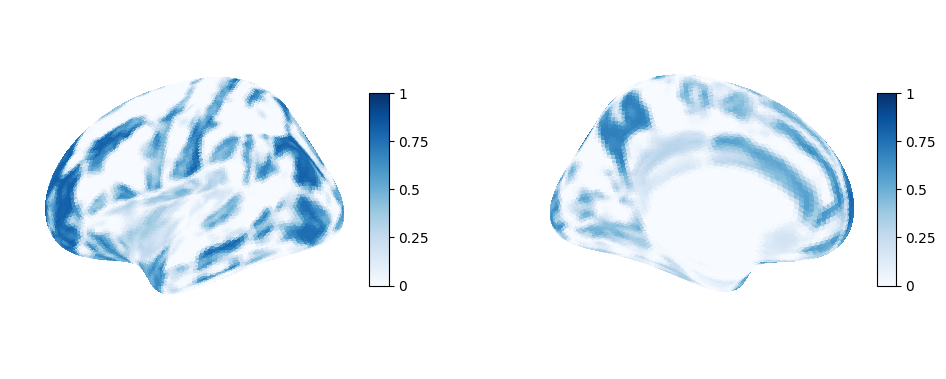
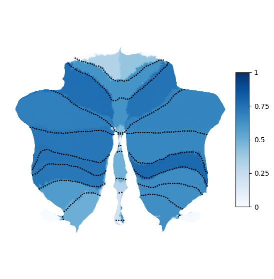
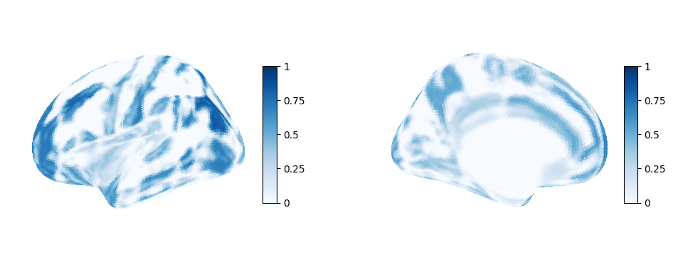
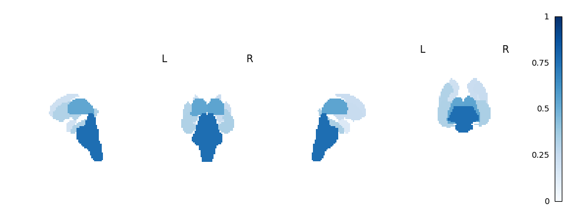
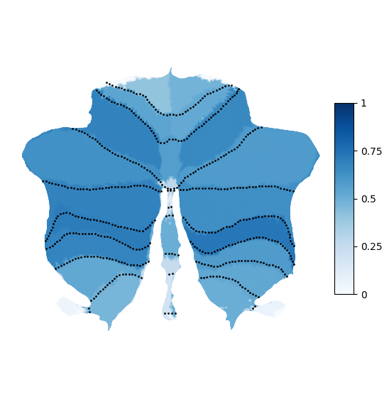
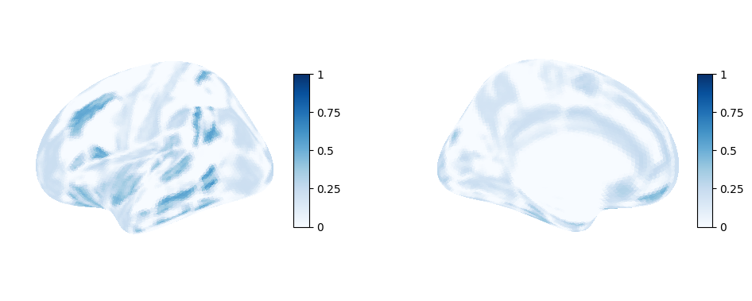
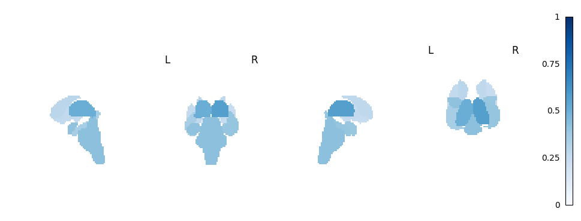
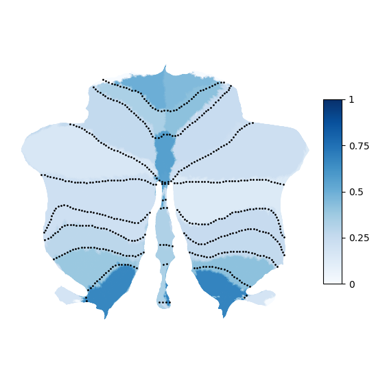
Subtraction map Patients - Controls#
# ==============================================================================
# PLOTTING SUBTRACTION MAP (PATIENTS - CONTROLS) ===
# ==============================================================================
print("\n=== Plotting SUBTRACTION (PATIENTS - CONTROLS) [Zero-Centered] ===")
# --- Subtraction Config ---
MAP_A = os.path.join(BASE_DIR, "CEBRA_project/Scripts_to_publish/xCEBRA_models_to_publish_pat/jf_convabs_inv_svd_cebra_procrustes_binary_mean.npy")
MAP_B = os.path.join(BASE_DIR, "CEBRA_project/Scripts_to_publish/xCEBRA_models_to_publish_con/jf_convabs_inv_svd_cebra_procrustes_binary_mean.npy")
OUT_DIR_SUB = os.path.join(BASE_DIR, "CEBRA_project/Scripts_to_publish/xCEBRA_models_to_publish_pat")
OUT_PREFIX_SUB = "Attribution_subtraction_map_PAT_minus_CON"
OUT_SVG_DIR_SUB = os.path.join(BASE_DIR, "CEBRA_project/Scripts_to_publish/Plotting_for_figures/Figure_3")
# --- Subtraction Helpers ---
def turquoise_white_red_cmap(name="turquoise_white_red"):
DIVERGING = {"neg": "#A50026", "zero": "#F7F7F7", "pos": "#018571"}
return LinearSegmentedColormap.from_list(
name, [(0.0, DIVERGING["neg"]), (0.5, DIVERGING["zero"]), (1.0, DIVERGING["pos"])], N=256
)
def auto_vlim_symmetric(img, percentile=99):
data = img.get_fdata()
data = data[np.isfinite(data)]
if data.size == 0: return None
return float(np.percentile(np.abs(data), percentile))
def get_labels_in_img(img_path):
img = nib.load(img_path)
data = img.get_fdata()
labs, counts = np.unique(data.astype(np.int64), return_counts=True)
keep = [int(l) for l in labs if l != 0 and counts[labs.tolist().index(l)] > 0]
return img, np.array(sorted(keep), dtype=int)
def build_stat_from_label_image(img, scores_dict):
data = img.get_fdata().astype(np.int64)
stat = np.zeros_like(data, dtype=np.float32)
for idx, val in scores_dict.items():
if int(idx) == 0: continue
stat[data == int(idx)] = float(val)
return nib.Nifti1Image(stat, img.affine, img.header)
def safe_sum_imgs_to_target(imgs, target_img):
data_sum = np.zeros(target_img.shape, dtype=np.float32)
for im in imgs:
r = resample_to_img(im, target_img, interpolation="nearest")
data_sum += r.get_fdata().astype(np.float32)
return nib.Nifti1Image(data_sum, target_img.affine, target_img.header)
def plot_and_save_cerebellar_flatmap_global(nifti_path, out_svg_path, cmap, vmin, vmax):
try:
surf_data = suit.flatmap.vol_to_surf([nifti_path], space='FSL', stats='mode')
fig = plt.figure(figsize=(8, 6))
ax = suit.flatmap.plot(
surf_data, render='matplotlib', cmap=cmap,
cscale=[vmin, vmax], colorbar=True, borders='borders.txt'
)
plt.savefig(out_svg_path, format="png", dpi=200, transparent=True, bbox_inches="tight")
plt.close(fig)
print(f"Saved Cerebellar flatmap SVG: {out_svg_path}")
except Exception as e:
print(f"Failed to create cerebellar flatmap: {e}")
# --- 1. Load and Subtract (Zero-Centered) ---
A = np.load(MAP_A)
B = np.load(MAP_B)
# Collapse to 1D if necessary
if A.ndim == 2:
VA, VB = A.mean(axis=0), B.mean(axis=0)
else:
VA, VB = A, B
# Mean Center each map independently BEFORE subtracting
VA_centered = VA - np.mean(VA)
VB_centered = VB - np.mean(VB)
# Subtract the centered maps
V_sub = VA_centered - VB_centered
print(f"DIAGNOSTIC | Mean of subtraction vector (V_sub): {np.mean(V_sub):.6f} (Min: {np.min(V_sub):.4f}, Max: {np.max(V_sub):.4f})")
# --- 2. Build NIfTIs ---
img1_sub, labels1_sub = get_labels_in_img(ATLAS1)
img2_sub, labels2_sub = get_labels_in_img(ATLAS2)
img3_sub, labels3_sub = get_labels_in_img(ATLAS3)
n1_s, n2_s, n3_s = len(labels1_sub), len(labels2_sub), len(labels3_sub)
V1_s, V2_s, V3_s = V_sub[:n1_s], V_sub[n1_s:n1_s+n2_s], V_sub[n1_s+n2_s:]
scores1_s = {int(i): float(v) for i, v in zip(labels1_sub, V1_s)}
scores2_s = {int(i): float(v) for i, v in zip(labels2_sub, V2_s)}
scores3_s = {int(i): float(v) for i, v in zip(labels3_sub, V3_s)}
stat1_sub = build_stat_from_label_image(img1_sub, scores1_s)
stat2_sub = build_stat_from_label_image(img2_sub, scores2_s)
stat3_sub = build_stat_from_label_image(img3_sub, scores3_s)
combined_sub = safe_sum_imgs_to_target([stat1_sub, stat2_sub, stat3_sub], img1_sub)
print(f"DIAGNOSTIC | Mean of non-zero voxels in 3D combined map: {np.mean(combined_sub.get_fdata()[combined_sub.get_fdata() != 0]):.6f}")
os.makedirs(OUT_DIR_SUB, exist_ok=True)
nib.save(stat1_sub, os.path.join(OUT_DIR_SUB, f"{OUT_PREFIX_SUB}_cortical.nii.gz"))
nib.save(stat2_sub, os.path.join(OUT_DIR_SUB, f"{OUT_PREFIX_SUB}_subcortical.nii.gz"))
nib.save(stat3_sub, os.path.join(OUT_DIR_SUB, f"{OUT_PREFIX_SUB}_anatom.nii.gz"))
nib.save(combined_sub, os.path.join(OUT_DIR_SUB, f"{OUT_PREFIX_SUB}_combined.nii.gz"))
# --- 3. Save CSV (LaTeX rows, with region names) ---
path_cort = os.path.join(BASE_DIR, "CEBRA_project/atlas/HarvardOxford-Cortical-Lateralized.xml")
path_sub = os.path.join(BASE_DIR, "CEBRA_project/atlas/HarvardOxford-Subcortical_only_used_regions.xlsx")
path_cer = os.path.join(BASE_DIR, "CEBRA_project/atlas/Cerebellum_MNI_dseg_atlas_labels.tsv")
map_cort = parse_ho_xml(path_cort, offset=1)
map_sub = parse_sub_xlsx(path_sub)
map_cer = parse_cereb_tsv(path_cer)
def _name(idx, mapping, prefix):
return f"{prefix}: {mapping.get(int(idx), f'Region-{idx}').replace(',', '')}"
keys_sub = (
[_name(i, map_cort, "cortical") for i in labels1_sub] +
[_name(i, map_sub, "subcortical") for i in labels2_sub] +
[_name(i, map_cer, "cerebellar") for i in labels3_sub]
)
df_sub = pd.DataFrame({
"feature_key": keys_sub,
"region_id": np.concatenate([labels1_sub, labels2_sub, labels3_sub]),
"value": V_sub,
}).sort_values("value", ascending=False)
out_table_sub = os.path.join(OUT_DIR_SUB, f"{OUT_PREFIX_SUB}_roi_scores.csv")
with open(out_table_sub, "w") as f:
for _, row in df_sub.iterrows():
category, region_name = row["feature_key"].split(": ", 1)
region_name = region_name.replace("_", "\\_")
f.write(f"{category} & {region_name} & {row['region_id']} & {row['value']:.4f} \\\\\n")
print(f"Wrote LaTeX rows: {out_table_sub}")
# --- 4. Plotting Setup ---
os.makedirs(OUT_SVG_DIR_SUB, exist_ok=True)
vmax_sub = auto_vlim_symmetric(combined_sub, percentile=98)
cmap_sub = turquoise_white_red_cmap()
# --- 5. Plot 2D Combined Map ---
display_sub = plotting.plot_stat_map(
combined_sub, title=None, draw_cross=False, annotate=False, cmap=cmap_sub,
colorbar=True, cut_coords=(5, -25, 15), vmax=vmax_sub, vmin=-vmax_sub
)
fig_sub_2d = display_sub.frame_axes.figure
fig_sub_2d.patch.set_alpha(0)
for ax in fig_sub_2d.axes:
if ax is not display_sub._cbar.ax:
ax.set_axis_off()
ax.patch.set_alpha(0)
display_sub._cbar.ax.patch.set_alpha(0)
out_svg_2d = os.path.join(OUT_SVG_DIR_SUB, f"{OUT_PREFIX_SUB}_combined_2d.svg")
display_sub.savefig(out_svg_2d, dpi=300, transparent=True, bbox_inches="tight", pad_inches=0)
display_sub.close()
# --- 6. Plot 3D Cortical Mesh ---
fsaverage_sub = datasets.fetch_surf_fsaverage('fsaverage5')
texture_left_sub = surface.vol_to_surf(stat1_sub, fsaverage_sub.pial_left, interpolation='linear')
fig_surf_sub = plt.figure(figsize=(12, 5))
ax_lat_sub = fig_surf_sub.add_subplot(121, projection='3d')
plotting.plot_surf_stat_map(
fsaverage_sub.infl_left, texture_left_sub, hemi='left', view='lateral',
colorbar=True, cmap=cmap_sub, bg_map=fsaverage_sub.sulc_left, axes=ax_lat_sub,
vmax=vmax_sub, symmetric_cbar=True
)
ax_med_sub = fig_surf_sub.add_subplot(122, projection='3d')
plotting.plot_surf_stat_map(
fsaverage_sub.infl_left, texture_left_sub, hemi='left', view='medial',
colorbar=True, cmap=cmap_sub, bg_map=fsaverage_sub.sulc_left, axes=ax_med_sub,
vmax=vmax_sub, symmetric_cbar=True
)
out_svg_mesh = os.path.join(OUT_SVG_DIR_SUB, f"{OUT_PREFIX_SUB}_cortical_mesh.png")
fig_surf_sub.savefig(out_svg_mesh, dpi=300, transparent=True, bbox_inches="tight", pad_inches=0)
plt.close(fig_surf_sub)
# --- 7. Plot 3D Subcortical Glass Brain ---
disp_glass_sub = plotting.plot_glass_brain(
stat2_sub, display_mode='lyrz', cmap=cmap_sub, plot_abs=False, colorbar=True,
vmax=vmax_sub, vmin=-vmax_sub, threshold=1e-5
)
for ax in disp_glass_sub.axes.values():
for patch in ax.ax.patches: patch.set_alpha(0)
for line in ax.ax.lines: line.set_alpha(0)
if hasattr(disp_glass_sub, '_cbar') and disp_glass_sub._cbar is not None:
disp_glass_sub._cbar.ax.patch.set_alpha(0)
out_svg_glass = os.path.join(OUT_SVG_DIR_SUB, f"{OUT_PREFIX_SUB}_subcortical_glass.svg")
disp_glass_sub.savefig(out_svg_glass, dpi=300, transparent=True, bbox_inches="tight", pad_inches=0)
disp_glass_sub.close()
# --- 8. Plot Cerebellar Flatmap ---
anatom_nii_path_sub = os.path.join(OUT_DIR_SUB, f"{OUT_PREFIX_SUB}_anatom.nii.gz")
out_svg_flatmap_sub = os.path.join(OUT_SVG_DIR_SUB, f"{OUT_PREFIX_SUB}_cerebellum_flatmap.png")
plot_and_save_cerebellar_flatmap_global(
anatom_nii_path_sub,
out_svg_flatmap_sub,
cmap=cmap_sub,
vmin=-vmax_sub,
vmax=vmax_sub
)
print(f"✓ Saved Subtraction SVGs to: {OUT_SVG_DIR_SUB}")
plt.show()
=== Plotting SUBTRACTION (PATIENTS - CONTROLS) [Zero-Centered] ===
DIAGNOSTIC | Mean of subtraction vector (V_sub): 0.000000 (Min: -0.5178, Max: 0.5134)
DIAGNOSTIC | Mean of non-zero voxels in 3D combined map: 0.181986
Wrote LaTeX rows: /mnt/moritz/CEBRA_project/Scripts_to_publish/xCEBRA_models_to_publish_pat/Attribution_subtraction_map_PAT_minus_CON_roi_scores.csv
Saved Cerebellar flatmap SVG: /mnt/moritz/CEBRA_project/Scripts_to_publish/Plotting_for_figures/Figure_3/Attribution_subtraction_map_PAT_minus_CON_cerebellum_flatmap.png
✓ Saved Subtraction SVGs to: /mnt/moritz/CEBRA_project/Scripts_to_publish/Plotting_for_figures/Figure_3
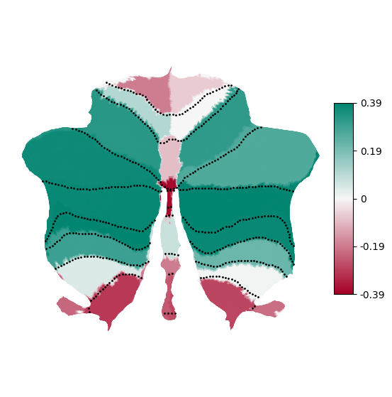
Robustness checks#
weights_to_try = [0.0, 0.5, 1.0, 5.0, 10.0, 25.0, 100.0]
# Model variations: hidden units, time offset, temperature
# Model with 512 hidden units
results_512_hidden_units = run_jacobian_weight_sweep(
data=data,
save_root="xCEBRA_models_to_publish_robust/offset512_hidden_units",
num_units=512,
weights_to_try=weights_to_try,
num_repeats=3,
k_last=10,
make_per_run_plots=True,
)
compute_and_save_jacobians_for_all_models(data,batch_size = 4096, save_root=os.path.join(BASE_DIR, "xCEBRA_models_to_publish_robust/offset512_hidden_units"),overwrite=False, weights=[1.0])
# Model with 2048 hidden units
results_2048_hidden_units = run_jacobian_weight_sweep(
data=data,
save_root="xCEBRA_models_to_publish_robust/offset2048_hidden_units",
num_units=2048,
weights_to_try=weights_to_try,
num_repeats=3,
k_last=10,
make_per_run_plots=True,
)
compute_and_save_jacobians_for_all_models(data,batch_size = 4096, save_root=os.path.join(BASE_DIR, "xCEBRA_models_to_publish_robust/offset2048_hidden_units"),overwrite=False, weights=[1.0])
# Model with positive samples sampled from 10 time steps in the future (time_offset=10)
results_time_offset_10 = run_jacobian_weight_sweep(
data=data,
save_root="xCEBRA_models_to_publish_robust/time_offset_10",
time_offset=10,
weights_to_try=weights_to_try,
num_repeats=3,
k_last=10,
make_per_run_plots=True,
)
compute_and_save_jacobians_for_all_models(data,batch_size = 4096, save_root=os.path.join(BASE_DIR, "xCEBRA_models_to_publish_robust/time_offset_10"),overwrite=False, weights=[1.0])
# Model with positive samples sampled from 30 time steps in the future (time_offset=30)
results_time_offset_30= run_jacobian_weight_sweep(
data=data,
save_root="xCEBRA_models_to_publish_robust/time_offset_30",
time_offset=30,
weights_to_try=weights_to_try,
num_repeats=3,
k_last=10,
make_per_run_plots=True,
)
compute_and_save_jacobians_for_all_models(data,batch_size = 4096, save_root=os.path.join(BASE_DIR, "xCEBRA_models_to_publish_robust/time_offset_30"),overwrite=False, weights=[5.0])
# Model with temperature=0.3
results_temp_0p3 = run_jacobian_weight_sweep(
data=data,
save_root="xCEBRA_models_to_publish_robust/temperature_0p3",
temperature=0.3,
weights_to_try=weights_to_try,
num_repeats=3,
k_last=10,
make_per_run_plots=True,
)
compute_and_save_jacobians_for_all_models(data,batch_size = 4096, save_root=os.path.join(BASE_DIR, "xCEBRA_models_to_publish_robust/temperature_0p3"),overwrite=False, weights=[1.0])
# Model with temperature=0.03
results_temp_0p03= run_jacobian_weight_sweep(
data=data,
save_root="xCEBRA_models_to_publish_robust/temperature_0p03",
temperature=0.03,
weights_to_try=weights_to_try,
num_repeats=3,
k_last=10,
make_per_run_plots=True,
)
compute_and_save_jacobians_for_all_models(data,batch_size = 4096, save_root=os.path.join(BASE_DIR, "xCEBRA_models_to_publish_robust/temperature_0p03"),overwrite=False, weights=[1.0])
# Model with jacobian regularization weight=5.0 (already computed above)
compute_and_save_jacobians_for_all_models(data,batch_size = 4096, save_root=os.path.join(BASE_DIR, "xCEBRA_models_to_publish"),overwrite=False, weights=[5.0])
# Model with jacobian regularization weight=25.0 (already computed above)
compute_and_save_jacobians_for_all_models(data,batch_size = 4096, save_root=os.path.join(BASE_DIR, "xCEBRA_models_to_publish"),overwrite=False, weights=[25.0])
=== Training with regularizer end_weight=0.0 (n=3 runs) ===
-- Run 1/3 for weight 0.0 already exists, loading from disk.
-- Run 2/3 for weight 0.0 already exists, loading from disk.
-- Run 3/3 for weight 0.0 already exists, loading from disk.
=== Training with regularizer end_weight=0.5 (n=3 runs) ===
-- Run 1/3 for weight 0.5 already exists, loading from disk.
-- Run 2/3 for weight 0.5 already exists, loading from disk.
-- Run 3/3 for weight 0.5 already exists, loading from disk.
=== Training with regularizer end_weight=1.0 (n=3 runs) ===
-- Run 1/3 for weight 1.0 already exists, loading from disk.
-- Run 2/3 for weight 1.0 already exists, loading from disk.
-- Run 3/3 for weight 1.0 already exists, loading from disk.
=== Training with regularizer end_weight=5.0 (n=3 runs) ===
-- Run 1/3 for weight 5.0 already exists, loading from disk.
-- Run 2/3 for weight 5.0 already exists, loading from disk.
-- Run 3/3 for weight 5.0 already exists, loading from disk.
=== Training with regularizer end_weight=10.0 (n=3 runs) ===
-- Run 1/3 for weight 10.0 already exists, loading from disk.
-- Run 2/3 for weight 10.0 already exists, loading from disk.
-- Run 3/3 for weight 10.0 already exists, loading from disk.
=== Training with regularizer end_weight=25.0 (n=3 runs) ===
-- Run 1/3 for weight 25.0 already exists, loading from disk.
-- Run 2/3 for weight 25.0 already exists, loading from disk.
-- Run 3/3 for weight 25.0 already exists, loading from disk.
=== Training with regularizer end_weight=100.0 (n=3 runs) ===
-- Run 1/3 for weight 100.0 already exists, loading from disk.
-- Run 2/3 for weight 100.0 already exists, loading from disk.
-- Run 3/3 for weight 100.0 already exists, loading from disk.
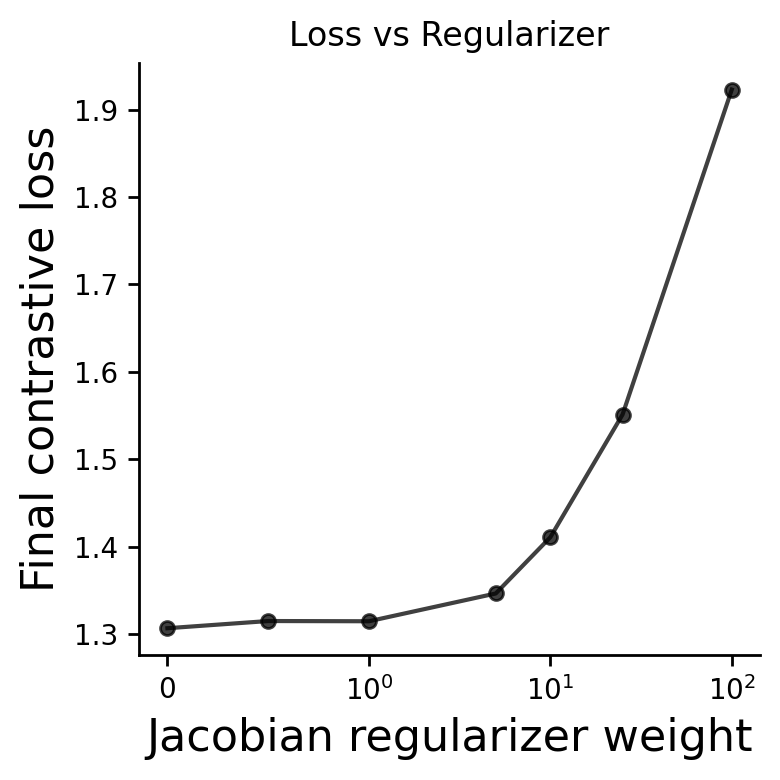
Done. Per-weight models/logs (with runs) in: xCEBRA_models_to_publish_robust/offset512_hidden_units
Wrote: xCEBRA_models_to_publish_robust/offset512_hidden_units/loss_aggregated_vs_regularizer_weight.svg xCEBRA_models_to_publish_robust/offset512_hidden_units/final_values_vs_regularizer_weight.csv xCEBRA_models_to_publish_robust/offset512_hidden_units/loss_details_per_weight.csv
=== Jacobian extraction complete ===
=== Training with regularizer end_weight=0.0 (n=3 runs) ===
-- Run 1/3 for weight 0.0 already exists, loading from disk.
-- Run 2/3 for weight 0.0 already exists, loading from disk.
-- Run 3/3 for weight 0.0 already exists, loading from disk.
=== Training with regularizer end_weight=0.5 (n=3 runs) ===
-- Run 1/3 for weight 0.5 already exists, loading from disk.
-- Run 2/3 for weight 0.5 already exists, loading from disk.
-- Run 3/3 for weight 0.5 already exists, loading from disk.
=== Training with regularizer end_weight=1.0 (n=3 runs) ===
-- Run 1/3 for weight 1.0 already exists, loading from disk.
-- Run 2/3 for weight 1.0 already exists, loading from disk.
-- Run 3/3 for weight 1.0 already exists, loading from disk.
=== Training with regularizer end_weight=5.0 (n=3 runs) ===
-- Run 1/3 for weight 5.0 already exists, loading from disk.
-- Run 2/3 for weight 5.0 already exists, loading from disk.
-- Run 3/3 for weight 5.0 already exists, loading from disk.
=== Training with regularizer end_weight=10.0 (n=3 runs) ===
-- Run 1/3 for weight 10.0 already exists, loading from disk.
-- Run 2/3 for weight 10.0 already exists, loading from disk.
-- Run 3/3 for weight 10.0 already exists, loading from disk.
=== Training with regularizer end_weight=25.0 (n=3 runs) ===
-- Run 1/3 for weight 25.0 already exists, loading from disk.
-- Run 2/3 for weight 25.0 already exists, loading from disk.
-- Run 3/3 for weight 25.0 already exists, loading from disk.
=== Training with regularizer end_weight=100.0 (n=3 runs) ===
-- Run 1/3 for weight 100.0 already exists, loading from disk.
-- Run 2/3 for weight 100.0 already exists, loading from disk.
-- Run 3/3 for weight 100.0 already exists, loading from disk.
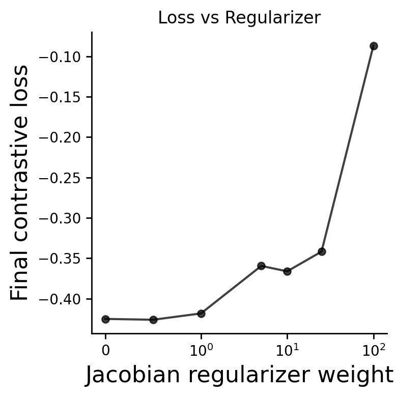
Done. Per-weight models/logs (with runs) in: xCEBRA_models_to_publish_robust/offset2048_hidden_units
Wrote: xCEBRA_models_to_publish_robust/offset2048_hidden_units/loss_aggregated_vs_regularizer_weight.svg xCEBRA_models_to_publish_robust/offset2048_hidden_units/final_values_vs_regularizer_weight.csv xCEBRA_models_to_publish_robust/offset2048_hidden_units/loss_details_per_weight.csv
=== Jacobian extraction complete ===
=== Training with regularizer end_weight=0.0 (n=3 runs) ===
-- Run 1/3 for weight 0.0 already exists, loading from disk.
-- Run 2/3 for weight 0.0 already exists, loading from disk.
-- Run 3/3 for weight 0.0 already exists, loading from disk.
=== Training with regularizer end_weight=0.5 (n=3 runs) ===
-- Run 1/3 for weight 0.5 already exists, loading from disk.
-- Run 2/3 for weight 0.5 already exists, loading from disk.
-- Run 3/3 for weight 0.5 already exists, loading from disk.
=== Training with regularizer end_weight=1.0 (n=3 runs) ===
-- Run 1/3 for weight 1.0 already exists, loading from disk.
-- Run 2/3 for weight 1.0 already exists, loading from disk.
-- Run 3/3 for weight 1.0 already exists, loading from disk.
=== Training with regularizer end_weight=5.0 (n=3 runs) ===
-- Run 1/3 for weight 5.0 already exists, loading from disk.
-- Run 2/3 for weight 5.0 already exists, loading from disk.
-- Run 3/3 for weight 5.0 already exists, loading from disk.
=== Training with regularizer end_weight=10.0 (n=3 runs) ===
-- Run 1/3 for weight 10.0 already exists, loading from disk.
-- Run 2/3 for weight 10.0 already exists, loading from disk.
-- Run 3/3 for weight 10.0 already exists, loading from disk.
=== Training with regularizer end_weight=25.0 (n=3 runs) ===
-- Run 1/3 for weight 25.0 already exists, loading from disk.
-- Run 2/3 for weight 25.0 already exists, loading from disk.
-- Run 3/3 for weight 25.0 already exists, loading from disk.
=== Training with regularizer end_weight=100.0 (n=3 runs) ===
-- Run 1/3 for weight 100.0 already exists, loading from disk.
-- Run 2/3 for weight 100.0 already exists, loading from disk.
-- Run 3/3 for weight 100.0 already exists, loading from disk.
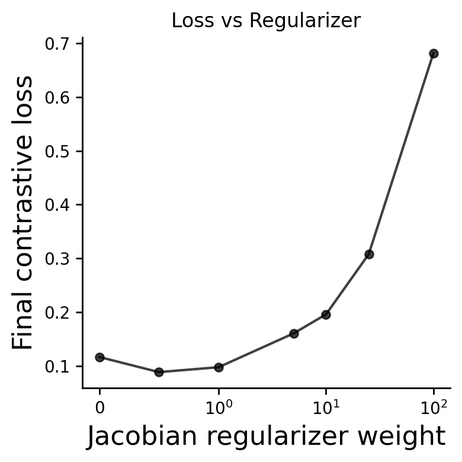
Done. Per-weight models/logs (with runs) in: xCEBRA_models_to_publish_robust/time_offset_10
Wrote: xCEBRA_models_to_publish_robust/time_offset_10/loss_aggregated_vs_regularizer_weight.svg xCEBRA_models_to_publish_robust/time_offset_10/final_values_vs_regularizer_weight.csv xCEBRA_models_to_publish_robust/time_offset_10/loss_details_per_weight.csv
=== Jacobian extraction complete ===
=== Training with regularizer end_weight=0.0 (n=3 runs) ===
-- Run 1/3 for weight 0.0 already exists, loading from disk.
-- Run 2/3 for weight 0.0 already exists, loading from disk.
-- Run 3/3 for weight 0.0 already exists, loading from disk.
=== Training with regularizer end_weight=0.5 (n=3 runs) ===
-- Run 1/3 for weight 0.5 already exists, loading from disk.
-- Run 2/3 for weight 0.5 already exists, loading from disk.
-- Run 3/3 for weight 0.5 already exists, loading from disk.
=== Training with regularizer end_weight=1.0 (n=3 runs) ===
-- Run 1/3 for weight 1.0 already exists, loading from disk.
-- Run 2/3 for weight 1.0 already exists, loading from disk.
-- Run 3/3 for weight 1.0 already exists, loading from disk.
=== Training with regularizer end_weight=5.0 (n=3 runs) ===
-- Run 1/3 for weight 5.0 already exists, loading from disk.
-- Run 2/3 for weight 5.0 already exists, loading from disk.
-- Run 3/3 for weight 5.0 already exists, loading from disk.
=== Training with regularizer end_weight=10.0 (n=3 runs) ===
-- Run 1/3 for weight 10.0 already exists, loading from disk.
-- Run 2/3 for weight 10.0 already exists, loading from disk.
-- Run 3/3 for weight 10.0 already exists, loading from disk.
=== Training with regularizer end_weight=25.0 (n=3 runs) ===
-- Run 1/3 for weight 25.0 already exists, loading from disk.
-- Run 2/3 for weight 25.0 already exists, loading from disk.
-- Run 3/3 for weight 25.0 already exists, loading from disk.
=== Training with regularizer end_weight=100.0 (n=3 runs) ===
-- Run 1/3 for weight 100.0 already exists, loading from disk.
-- Run 2/3 for weight 100.0 already exists, loading from disk.
-- Run 3/3 for weight 100.0 already exists, loading from disk.
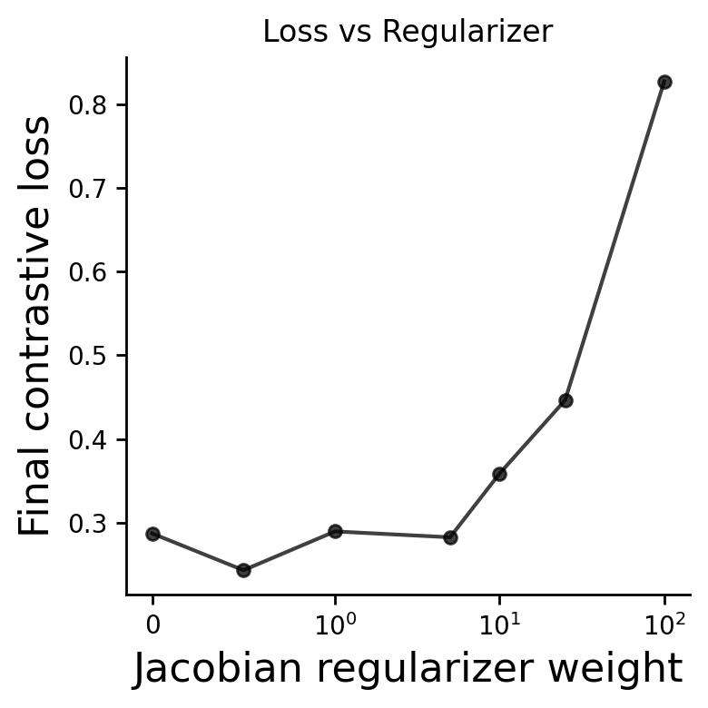
Done. Per-weight models/logs (with runs) in: xCEBRA_models_to_publish_robust/time_offset_30
Wrote: xCEBRA_models_to_publish_robust/time_offset_30/loss_aggregated_vs_regularizer_weight.svg xCEBRA_models_to_publish_robust/time_offset_30/final_values_vs_regularizer_weight.csv xCEBRA_models_to_publish_robust/time_offset_30/loss_details_per_weight.csv
=== Jacobian extraction complete ===
=== Training with regularizer end_weight=0.0 (n=3 runs) ===
-- Run 1/3 for weight 0.0 already exists, loading from disk.
-- Run 2/3 for weight 0.0 already exists, loading from disk.
-- Run 3/3 for weight 0.0 already exists, loading from disk.
=== Training with regularizer end_weight=0.5 (n=3 runs) ===
-- Run 1/3 for weight 0.5 already exists, loading from disk.
-- Run 2/3 for weight 0.5 already exists, loading from disk.
-- Run 3/3 for weight 0.5 already exists, loading from disk.
=== Training with regularizer end_weight=1.0 (n=3 runs) ===
-- Run 1/3 for weight 1.0 already exists, loading from disk.
-- Run 2/3 for weight 1.0 already exists, loading from disk.
-- Run 3/3 for weight 1.0 already exists, loading from disk.
=== Training with regularizer end_weight=5.0 (n=3 runs) ===
-- Run 1/3 for weight 5.0 already exists, loading from disk.
-- Run 2/3 for weight 5.0 already exists, loading from disk.
-- Run 3/3 for weight 5.0 already exists, loading from disk.
=== Training with regularizer end_weight=10.0 (n=3 runs) ===
-- Run 1/3 for weight 10.0 already exists, loading from disk.
-- Run 2/3 for weight 10.0 already exists, loading from disk.
-- Run 3/3 for weight 10.0 already exists, loading from disk.
=== Training with regularizer end_weight=25.0 (n=3 runs) ===
-- Run 1/3 for weight 25.0 already exists, loading from disk.
-- Run 2/3 for weight 25.0 already exists, loading from disk.
-- Run 3/3 for weight 25.0 already exists, loading from disk.
=== Training with regularizer end_weight=100.0 (n=3 runs) ===
-- Run 1/3 for weight 100.0 already exists, loading from disk.
-- Run 2/3 for weight 100.0 already exists, loading from disk.
-- Run 3/3 for weight 100.0 already exists, loading from disk.
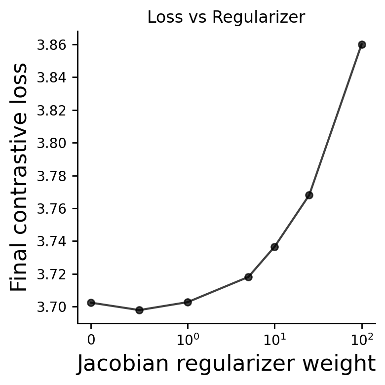
Done. Per-weight models/logs (with runs) in: xCEBRA_models_to_publish_robust/temperature_0p3
Wrote: xCEBRA_models_to_publish_robust/temperature_0p3/loss_aggregated_vs_regularizer_weight.svg xCEBRA_models_to_publish_robust/temperature_0p3/final_values_vs_regularizer_weight.csv xCEBRA_models_to_publish_robust/temperature_0p3/loss_details_per_weight.csv
=== Jacobian extraction complete ===
=== Training with regularizer end_weight=0.0 (n=3 runs) ===
-- Run 1/3 for weight 0.0 already exists, loading from disk.
-- Run 2/3 for weight 0.0 already exists, loading from disk.
-- Run 3/3 for weight 0.0 already exists, loading from disk.
=== Training with regularizer end_weight=0.5 (n=3 runs) ===
-- Run 1/3 for weight 0.5 already exists, loading from disk.
-- Run 2/3 for weight 0.5 already exists, loading from disk.
-- Run 3/3 for weight 0.5 already exists, loading from disk.
=== Training with regularizer end_weight=1.0 (n=3 runs) ===
-- Run 1/3 for weight 1.0 already exists, loading from disk.
-- Run 2/3 for weight 1.0 already exists, loading from disk.
-- Run 3/3 for weight 1.0 already exists, loading from disk.
=== Training with regularizer end_weight=5.0 (n=3 runs) ===
-- Run 1/3 for weight 5.0 already exists, loading from disk.
-- Run 2/3 for weight 5.0 already exists, loading from disk.
-- Run 3/3 for weight 5.0 already exists, loading from disk.
=== Training with regularizer end_weight=10.0 (n=3 runs) ===
-- Run 1/3 for weight 10.0 already exists, loading from disk.
-- Run 2/3 for weight 10.0 already exists, loading from disk.
-- Run 3/3 for weight 10.0 already exists, loading from disk.
=== Training with regularizer end_weight=25.0 (n=3 runs) ===
-- Run 1/3 for weight 25.0 already exists, loading from disk.
-- Run 2/3 for weight 25.0 already exists, loading from disk.
-- Run 3/3 for weight 25.0 already exists, loading from disk.
=== Training with regularizer end_weight=100.0 (n=3 runs) ===
-- Run 1/3 for weight 100.0 already exists, loading from disk.
-- Run 2/3 for weight 100.0 already exists, loading from disk.
-- Run 3/3 for weight 100.0 already exists, loading from disk.
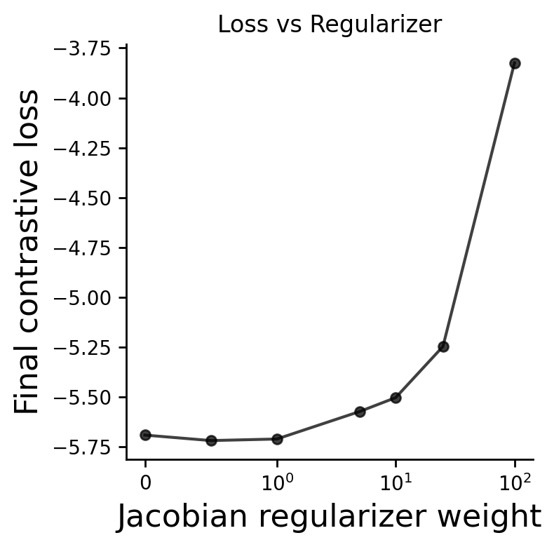
Done. Per-weight models/logs (with runs) in: xCEBRA_models_to_publish_robust/temperature_0p03
Wrote: xCEBRA_models_to_publish_robust/temperature_0p03/loss_aggregated_vs_regularizer_weight.svg xCEBRA_models_to_publish_robust/temperature_0p03/final_values_vs_regularizer_weight.csv xCEBRA_models_to_publish_robust/temperature_0p03/loss_details_per_weight.csv
=== Jacobian extraction complete ===
=== Jacobian extraction complete ===
=== Jacobian extraction complete ===
# Procrustes alignment and averaging of the binary CEBRA maps for each model variation
SAVE_ROOT = os.path.join(BASE_DIR, "CEBRA_project/Scripts_to_publish/xCEBRA_models_to_publish_robust/offset512_hidden_units")
WEIGHTS = [1.0]
mean_map, labels = align_and_mean_binary_cebra_procrustes_jf_inv(
save_root=SAVE_ROOT,
weights=WEIGHTS,
reference_weight=WEIGHTS[0],
reference_run=0,
subsample_cols=None,
max_subsamples=40000,
rng_seed=0,
save_pngs=True,
top_k=5,
subsample=None,
)
SAVE_ROOT = os.path.join(BASE_DIR, "CEBRA_project/Scripts_to_publish/xCEBRA_models_to_publish_robust/offset2048_hidden_units")
WEIGHTS = [1.0]
mean_map, labels = align_and_mean_binary_cebra_procrustes_jf_inv(
save_root=SAVE_ROOT,
weights=WEIGHTS,
reference_weight=WEIGHTS[0],
reference_run=0,
subsample_cols=None,
max_subsamples=40000,
rng_seed=0,
save_pngs=True,
top_k=5,
subsample=None,
)
SAVE_ROOT = os.path.join(BASE_DIR, "CEBRA_project/Scripts_to_publish/xCEBRA_models_to_publish_robust/time_offset_10")
WEIGHTS = [1.0]
mean_map, labels = align_and_mean_binary_cebra_procrustes_jf_inv(
save_root=SAVE_ROOT,
weights=WEIGHTS,
reference_weight=WEIGHTS[0],
reference_run=0,
subsample_cols=None,
max_subsamples=40000,
rng_seed=0,
save_pngs=True,
top_k=5,
subsample=None,
)
SAVE_ROOT = os.path.join(BASE_DIR, "CEBRA_project/Scripts_to_publish/xCEBRA_models_to_publish_robust/time_offset_30")
WEIGHTS = [5.0]
mean_map, labels = align_and_mean_binary_cebra_procrustes_jf_inv(
save_root=SAVE_ROOT,
weights=WEIGHTS,
reference_weight=WEIGHTS[0],
reference_run=0,
subsample_cols=None,
max_subsamples=40000,
rng_seed=0,
save_pngs=True,
top_k=5,
subsample=None,
)
SAVE_ROOT = os.path.join(BASE_DIR, "CEBRA_project/Scripts_to_publish/xCEBRA_models_to_publish_robust/temperature_0p3")
WEIGHTS = [1.0]
mean_map, labels = align_and_mean_binary_cebra_procrustes_jf_inv(
save_root=SAVE_ROOT,
weights=WEIGHTS,
reference_weight=WEIGHTS[0],
reference_run=0,
subsample_cols=None,
max_subsamples=40000,
rng_seed=0,
save_pngs=True,
top_k=5,
subsample=None,
)
SAVE_ROOT = os.path.join(BASE_DIR, "CEBRA_project/Scripts_to_publish/xCEBRA_models_to_publish_robust/temperature_0p03")
WEIGHTS = [1.0]
mean_map, labels = align_and_mean_binary_cebra_procrustes_jf_inv(
save_root=SAVE_ROOT,
weights=WEIGHTS,
reference_weight=WEIGHTS[0],
reference_run=0,
subsample_cols=None,
max_subsamples=40000,
rng_seed=0,
save_pngs=True,
top_k=5,
subsample=None,
)
SAVE_ROOT = os.path.join(BASE_DIR, "CEBRA_project/Scripts_to_publish/xCEBRA_models_to_publish")
WEIGHTS = [5.0]
mean_map, labels = align_and_mean_binary_cebra_procrustes_jf_inv(
save_root=SAVE_ROOT,
weights=WEIGHTS,
reference_weight=WEIGHTS[0],
reference_run=0,
subsample_cols=None,
max_subsamples=40000,
rng_seed=0,
save_pngs=True,
top_k=5,
subsample=None,
out_suffix="binary_mean_weight_5p0"
)
SAVE_ROOT = os.path.join(BASE_DIR, "CEBRA_project/Scripts_to_publish/xCEBRA_models_to_publish")
WEIGHTS = [25.0]
mean_map, labels = align_and_mean_binary_cebra_procrustes_jf_inv(
save_root=SAVE_ROOT,
weights=WEIGHTS,
reference_weight=WEIGHTS[0],
reference_run=0,
subsample_cols=None,
max_subsamples=40000,
rng_seed=0,
save_pngs=True,
top_k=5,
subsample=None,
out_suffix="binary_mean_weight_25p0"
)
Reference: w=1.0, run=0, shape=(32, 141)
Procrustes fit on ALL 141 columns.
Weight 1.0 — runs: run_0, run_1, run_2
(32, 141)
(32, 141)
(32, 141)
✓ Completed. Averaged 3 binary maps → /mnt/moritz/CEBRA_project/Scripts_to_publish/xCEBRA_models_to_publish_robust/offset512_hidden_units/jf_convabs_inv_svd_cebra_procrustes_binary_mean.npy
Reference: w=1.0, run=0, shape=(32, 141)
Procrustes fit on ALL 141 columns.
Weight 1.0 — runs: run_0, run_1, run_2
(32, 141)
(32, 141)
(32, 141)
✓ Completed. Averaged 3 binary maps → /mnt/moritz/CEBRA_project/Scripts_to_publish/xCEBRA_models_to_publish_robust/offset2048_hidden_units/jf_convabs_inv_svd_cebra_procrustes_binary_mean.npy
Reference: w=1.0, run=0, shape=(32, 141)
Procrustes fit on ALL 141 columns.
Weight 1.0 — runs: run_0, run_1, run_2
(32, 141)
(32, 141)
(32, 141)
✓ Completed. Averaged 3 binary maps → /mnt/moritz/CEBRA_project/Scripts_to_publish/xCEBRA_models_to_publish_robust/time_offset_10/jf_convabs_inv_svd_cebra_procrustes_binary_mean.npy
Reference: w=5.0, run=0, shape=(32, 141)
Procrustes fit on ALL 141 columns.
Weight 5.0 — runs: run_0, run_1, run_2
(32, 141)
(32, 141)
(32, 141)
✓ Completed. Averaged 3 binary maps → /mnt/moritz/CEBRA_project/Scripts_to_publish/xCEBRA_models_to_publish_robust/time_offset_30/jf_convabs_inv_svd_cebra_procrustes_binary_mean.npy
Reference: w=1.0, run=0, shape=(32, 141)
Procrustes fit on ALL 141 columns.
Weight 1.0 — runs: run_0, run_1, run_2
(32, 141)
(32, 141)
(32, 141)
✓ Completed. Averaged 3 binary maps → /mnt/moritz/CEBRA_project/Scripts_to_publish/xCEBRA_models_to_publish_robust/temperature_0p3/jf_convabs_inv_svd_cebra_procrustes_binary_mean.npy
Reference: w=1.0, run=0, shape=(32, 141)
Procrustes fit on ALL 141 columns.
Weight 1.0 — runs: run_0, run_1, run_2
(32, 141)
(32, 141)
(32, 141)
✓ Completed. Averaged 3 binary maps → /mnt/moritz/CEBRA_project/Scripts_to_publish/xCEBRA_models_to_publish_robust/temperature_0p03/jf_convabs_inv_svd_cebra_procrustes_binary_mean.npy
Reference: w=5.0, run=0, shape=(32, 141)
Procrustes fit on ALL 141 columns.
Weight 5.0 — runs: run_0, run_1, run_2
(32, 141)
(32, 141)
(32, 141)
✓ Completed. Averaged 3 binary maps → /mnt/moritz/CEBRA_project/Scripts_to_publish/xCEBRA_models_to_publish/jf_convabs_inv_svd_cebra_procrustes_binary_mean_weight_5p0.npy
Reference: w=25.0, run=0, shape=(32, 141)
Procrustes fit on ALL 141 columns.
Weight 25.0 — runs: run_0, run_1, run_2
(32, 141)
(32, 141)
(32, 141)
✓ Completed. Averaged 3 binary maps → /mnt/moritz/CEBRA_project/Scripts_to_publish/xCEBRA_models_to_publish/jf_convabs_inv_svd_cebra_procrustes_binary_mean_weight_25p0.npy
Compare attribution maps of models with parameter variations#
def _require_numpy_array(arr):
if not isinstance(arr, np.ndarray):
return np.array(arr)
return arr
def r2_heatmap_mean_roi_no_procrustes(
files,
labels=None,
rng_seed=0,
r2_use_abs=False,
show_heatmap=True,
save_root=None,
out_suffix="mean_roi_no_procrustes",
):
"""
Load .npy Jacobian maps (d, p), collapse them to (p,) by taking the mean
over dimensions (axis 0), and compute pairwise R^2 between these 1D vectors.
"""
def _ensure_dp(J, d=None, p=None, label=""):
J = np.asarray(J)
if J.ndim != 2:
raise ValueError(f"{label} must be 2D, got shape {J.shape}")
if d is not None and p is not None:
if J.shape == (d, p):
return J
if J.shape == (p, d):
print(f" · NOTE: transposed {label} from {J.shape} -> {(d, p)}")
return J.T
raise ValueError(f"{label} has shape {J.shape}, expected {(d, p)}")
if J.shape[0] > J.shape[1]:
print(f" · NOTE: heuristic transpose {label} from {J.shape} -> {J.T.shape}")
return J.T
return J
def _load_npy(path):
if not os.path.exists(path):
raise FileNotFoundError(path)
arr = np.load(path, allow_pickle=False)
return _require_numpy_array(arr)
def _r2_flat(A, B, use_abs=False, eps=1e-12):
# A and B are now 1D vectors of shape (p,)
a = A.astype(np.float64).ravel()
b = B.astype(np.float64).ravel()
if use_abs:
a = np.abs(a)
b = np.abs(b)
a -= a.mean()
b -= b.mean()
na = np.linalg.norm(a)
nb = np.linalg.norm(b)
if na < eps or nb < eps:
return 0.0
# Pearson correlation
corr = np.dot(a, b) / (na * nb)
corr = float(np.clip(corr, -1.0, 1.0))
return corr * corr
if files is None or len(files) < 2:
raise ValueError("Provide at least two .npy files.")
files = list(files)
if labels is None:
labels = [os.path.basename(f) for f in files]
else:
if len(labels) != len(files):
raise ValueError(f"labels must match files length ({len(files)}).")
labels = list(labels)
# --- Load and Collapse Maps ---
vectors = []
kept_labels = []
kept_files = []
ref_shape_p = None
for i, (path, lab) in enumerate(zip(files, labels)):
try:
# Load raw (d, p)
raw_J = _load_npy(path)
J = _ensure_dp(raw_J, label=lab)
current_p = J.shape[1]
if ref_shape_p is None:
ref_shape_p = current_p
elif current_p != ref_shape_p:
print(f" · Skipping {lab}: shape mismatch. Expected p={ref_shape_p}, got {current_p}")
continue
# Collapses (d, p) -> (p,)
mean_vector = J.mean(axis=0).astype(np.float32)
vectors.append(mean_vector)
kept_labels.append(lab)
kept_files.append(path)
except Exception as e:
print(f" · Skipping {lab}: error loading/processing: {e}")
continue
if len(vectors) < 2:
raise RuntimeError("Fewer than 2 maps remained after loading.")
# --- Calculate R2 ---
m = len(vectors)
R2 = np.eye(m, dtype=np.float64)
for i in range(m):
for j in range(i + 1, m):
score = _r2_flat(vectors[i], vectors[j], use_abs=r2_use_abs)
R2[i, j] = score
R2[j, i] = score
# --- HEATMAP ---
if show_heatmap:
off = R2[~np.eye(m, dtype=bool)]
vmin = float(off.min()) if off.size else float(R2.min())
vmax = 1.0
if vmin >= vmax: vmin = vmax - 1e-6
plt.figure(figsize=(0.6 * m + 4, 0.6 * m + 4))
im = plt.imshow(R2, cmap="magma", vmin=vmin, vmax=vmax, aspect="equal")
cbar = plt.colorbar(im, fraction=0.046, pad=0.04)
cbar.ax.tick_params(labelsize=24)
plt.xticks(range(m), kept_labels, rotation=60, ha="right", fontsize=24)
plt.yticks(range(m), kept_labels, fontsize=24)
plt.title("R² of ROI Attribution", fontsize=28)
plt.tight_layout()
fig_path = os.path.join(BASE_DIR, "CEBRA_project/Scripts_to_publish/Plotting_for_figures/Figure_S3/r2_heatmap_mean_roi_no_procrustes.svg")
plt.savefig(fig_path, dpi=300, transparent=True, bbox_inches="tight")
print(f"Saved R² heatmap figure: {fig_path}")
plt.show()
# --- Save Metadata ---
if save_root is not None:
os.makedirs(save_root, exist_ok=True)
r2_csv = os.path.join(save_root, f"r2_heatmap_{out_suffix}.csv")
with open(r2_csv, "w", newline="") as f:
w = csv.writer(f)
w.writerow([""] + kept_labels)
for i, lab in enumerate(kept_labels):
w.writerow([lab] + [f"{R2[i, j]:.6f}" for j in range(m)])
print(f"Saved R² CSV: {r2_csv}")
meta = {
"inputs": kept_files,
"labels": kept_labels,
"method": "Mean over dimensions (axis 0), then R^2",
"alignment": "None (Procrustes removed)",
"n_rois": int(ref_shape_p) if ref_shape_p else 0,
"rng_seed": int(rng_seed),
"metrics": {"r2_use_abs": bool(r2_use_abs)},
"outputs": {"r2_csv": os.path.basename(r2_csv)} if save_root else {},
}
meta_path = os.path.join(save_root, f"r2_meta_{out_suffix}.json")
with open(meta_path, "w") as f: json.dump(meta, f, indent=2)
print(f"Saved metadata JSON: {meta_path}")
return R2, kept_labels, kept_files, vectors
R2, labs, paths, aligned_maps = r2_heatmap_mean_roi_no_procrustes(
files=[
os.path.join(BASE_DIR, "CEBRA_project/Scripts_to_publish/xCEBRA_models_to_publish/jf_convabs_inv_svd_cebra_procrustes_binary_mean.npy"),
os.path.join(BASE_DIR, "CEBRA_project/Scripts_to_publish/xCEBRA_models_to_publish_robust/offset512_hidden_units/jf_convabs_inv_svd_cebra_procrustes_binary_mean.npy"),
os.path.join(BASE_DIR, "CEBRA_project/Scripts_to_publish/xCEBRA_models_to_publish_robust/offset2048_hidden_units/jf_convabs_inv_svd_cebra_procrustes_binary_mean.npy"),
os.path.join(BASE_DIR, "CEBRA_project/Scripts_to_publish/xCEBRA_models_to_publish_robust/temperature_0p3/jf_convabs_inv_svd_cebra_procrustes_binary_mean.npy"),
os.path.join(BASE_DIR, "CEBRA_project/Scripts_to_publish/xCEBRA_models_to_publish_robust/temperature_0p03/jf_convabs_inv_svd_cebra_procrustes_binary_mean.npy"),
os.path.join(BASE_DIR, "CEBRA_project/Scripts_to_publish/xCEBRA_models_to_publish_robust/time_offset_10/jf_convabs_inv_svd_cebra_procrustes_binary_mean.npy"),
os.path.join(BASE_DIR, "CEBRA_project/Scripts_to_publish/xCEBRA_models_to_publish_robust/time_offset_30/jf_convabs_inv_svd_cebra_procrustes_binary_mean.npy"),
os.path.join(BASE_DIR, "CEBRA_project/Scripts_to_publish/xCEBRA_models_to_publish/jf_convabs_inv_svd_cebra_procrustes_binary_mean_weight_5p0.npy"),
os.path.join(BASE_DIR, "CEBRA_project/Scripts_to_publish/xCEBRA_models_to_publish/jf_convabs_inv_svd_cebra_procrustes_binary_mean_weight_25p0.npy"),
os.path.join(BASE_DIR, "CEBRA_project/Scripts_to_publish/xCEBRA_models_to_publish_pat/jf_convabs_inv_svd_cebra_procrustes_binary_mean.npy"),
os.path.join(BASE_DIR, "CEBRA_project/Scripts_to_publish/xCEBRA_models_to_publish_con/jf_convabs_inv_svd_cebra_procrustes_binary_mean.npy"),
],
labels=["Baseline","512HU","2048HU","Temp0.3","Temp0.03","TimeOffset10","TimeOffset30","RegularizerWeight5.0","RegularizerWeight25.0","Patients","Controls"],
rng_seed=0,
r2_use_abs=False,
show_heatmap=True,
save_root=None, # set a folder if you want CSV/JSON
)
Saved R² heatmap figure: /mnt/moritz/CEBRA_project/Scripts_to_publish/Plotting_for_figures/Figure_S3/r2_heatmap_mean_roi_no_procrustes.svg
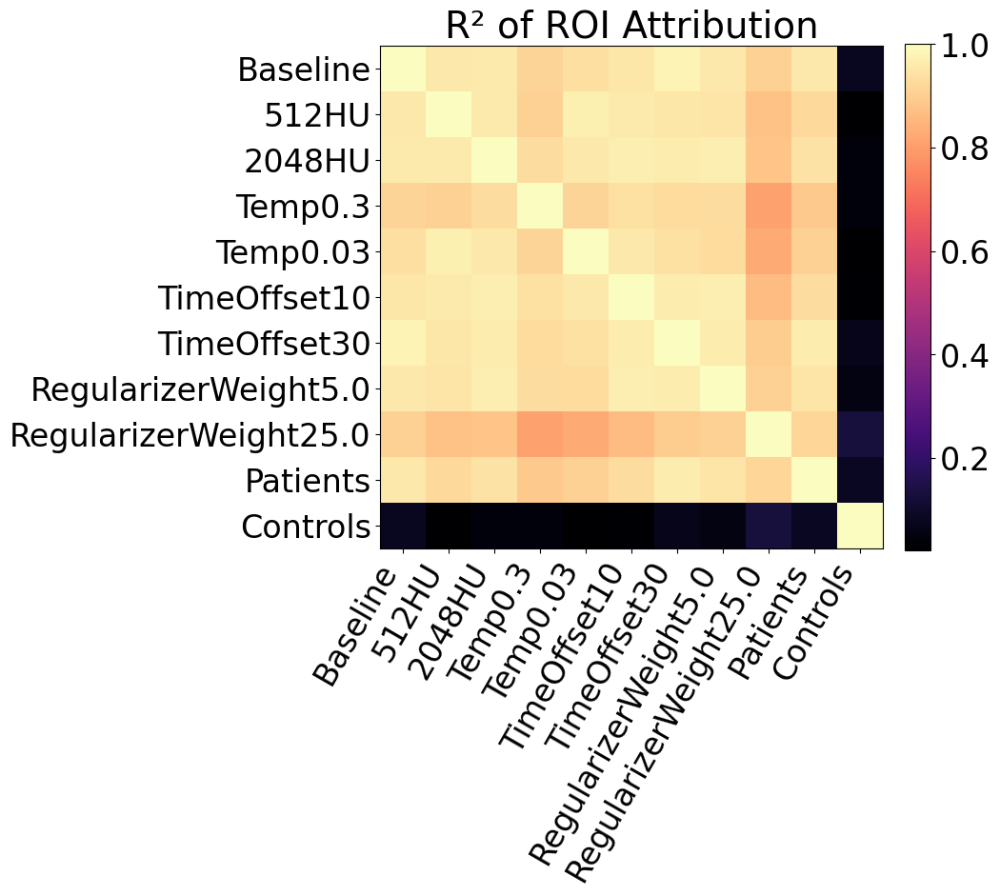